EnzAIme: complete slide-by-slide explanation
Study guide for the 83-slide version of PET_Degradation_Overview.pptx, last modified 12 October 2026. This guide follows the actual presentation order, including the four interface screenshots at slides 70–73. It explains the scientific content, algorithms, notation, graphs, and what the current project implements. Worked examples explicitly described as illustrative are teaching examples, not additional project results.
The recurring date, department name, college identity, slide numbers, and MEPCO footer identify the presentation and its institution. They do not represent experimental metadata. Their role is the same on each slide. The original slide text is retained in the accompanying source inventory; the browser edition includes it beside each explanation.
Before you rehearse: the central project story
The project asks whether a frozen protein language model adds useful information to temperature, pH, and duration when predicting measured TPA concentration from PET assays. The confirmed research cohort has 221 assay records from 25 proteins. A, B, and C compare conditions alone, protein embeddings alone, and their combination. Evaluation holds out entire protein IDs. Aggregate results do not show an improvement from adding embeddings under this setup. Error analysis explains important failures rather than hiding them.
The web application serves a separate legacy research model. Its saved preprocessing has strong 227-row lineage evidence, while the exact final training and evaluation memberships remain unresolved. Recommendations use the confirmed 221-row dataset for candidate identity and evidence counts, but use that legacy model for scores. Mutation generation and structure validation are future extensions.
Slide 1 — Title and project identity
- Environment-aware: the prediction uses temperature, pH, and assay duration. The present model does not include every environmental variable found in industrial wastewater.
- AI platform: a protein encoder and regression model connect to a backend API and a browser interface.
- Enzyme recommendation: existing candidate proteins are ranked under user-supplied conditions.
- Optimization: this is part of the broader ambition. The current recommendation workflow does not demonstrate a validated mutation-optimization loop or a search for globally optimal operating conditions.
- Industrial waste biodegradation: the long-term application. The subtitle correctly narrows the demonstrated work to PET assays and TPA concentration prediction.
- Review 2, members, guide, department, institution, date: these identify the review stage, Ramkumar R and Sukil Raj M S, the guide Mr. G. Kirubakaran, and the institutional context.
How to present: “Our current contribution is a provenance-audited PET/TPA prediction study and an exploratory enzyme-recommendation interface. Broader wastewater applications and enzyme optimization are future extensions.”
Original slide text (16 paragraphs)
Extracted from the original slide. Equations in this transcript may be linearized; use the explained formulas above.
- 1
- Department of AI&DS
- Environment-Aware AI Platform for
- Enzyme Recommendation and Optimization
- for Industrial Waste Biodegradation
- REVIEW 2
- Current research focus: TPA/PET activity prediction
- MEMBERS:
- Ramkumar R
- Sukil Raj M S
- GUIDE:
- Mr. G. Kirubakaran
- B.E., M.E.
- Department of Artificial Intelligence and Data Science
- Mepco Schlenk Engineering College
- October 12, 2026
Slide 2 — Enzymatic industrial waste degradation overview
- Dyes, plastics, phenolic compounds, oils, and persistent pollutants: this motivates the broad environmental problem. These categories have different chemistry and require different evidence and treatment strategies.
- Activity loss under extreme pH and temperature: enzyme activity depends on molecular structure and chemical conditions. The effect varies by enzyme; avoid suggesting every natural enzyme fails at the same conditions.
- Protein language models such as ESM-2: the sequence is represented as learned numerical features. Similar to learning patterns in text, the model learns patterns across protein sequences, but its outputs here are protein features rather than sentences.
- AI-assisted recommendation and optimization pipeline: this is the proposed overall direction. Current implemented results are concentration prediction and exploratory ranking.
Project connection: the three condition features are a limited, explicit way of representing the assay environment.
Original slide text (8 paragraphs)
Extracted from the original slide. Equations in this transcript may be linearized; use the explained formulas above.
- 2
- Enzymatic Industrial Waste Degradation — Overview
- Industrial wastewater contains dyes, plastics, phenolic compounds, oils, and other persistent pollutants.
- Many natural enzymes lose activity under extreme pH and temperature conditions.
- Recent Protein Language Models (ESM-2) can analyze protein sequences computationally.
- This project proposes an AI-assisted enzyme recommendation and optimization pipeline for industrial wastewater treatment.
- Department of AI&DS
- October 12, 2026
Slide 3 — Target industrial waste categories
- Textile dye effluent: a possible future application requiring dye-specific activity measurements.
- PET/PU plastic waste: PET and polyurethane are different materials. The confirmed cohort in this project concerns PET, not a demonstrated combined PET/PU predictor.
- Pesticide/phenolic waste: another future scope requiring its own defensible labels and reaction conditions.
- Heavy-metal-laden sludge: a future treatment context. Metals are elements; biological processing can alter chemical form, binding, or mobility, but the word “degradation” should not imply that an enzyme destroys the metal element.
- Current scope statement: the revised sentence correctly limits the study to PET assays with TPA concentration targets.
How to present: “These are application categories motivating the platform. The evaluated dataset and current model study cover PET/TPA only.”
View original slide figures
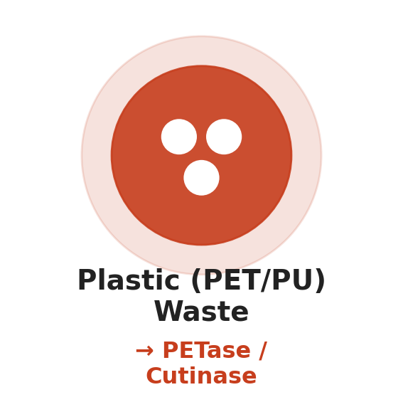
Original slide text (9 paragraphs)
Extracted from the original slide. Equations in this transcript may be linearized; use the explained formulas above.
- 3
- Department of AI&DS
- Target Industrial Waste Categories
- Textile Dye Effluent
- Plastic (PET/PU) Waste
- Pesticide / Phenolic Waste
- Heavy-metal-laden Sludge
- The current study focuses on PET assays with TPA concentration targets. Other waste categories are future extensions.
- October 12, 2026
Slide 4 — Enzyme research overview
- Enzymes catalyse reactions: they facilitate a reaction and can contribute to PET breakdown. The dataset concerns recorded assays of such activity.
- Sequence plus assay conditions describes an observation: sequence identifies the molecular candidate; conditions describe how it was tested. Two rows can use the same sequence but have different temperatures or durations.
- Prediction of measured TPA concentration: the supervised target is a continuous quantity. Consequently, this is regression, evaluated using error and correlation metrics.
Key distinction: 221 observations do not mean 221 different enzymes. Several observations belong to each of the 25 proteins.
Original slide text (7 paragraphs)
Extracted from the original slide. Equations in this transcript may be linearized; use the explained formulas above.
- 4
- Department of AI&DS
- Enzyme Research Overview
- • Enzymes catalyse biological reactions and can support PET degradation research.
- • Protein sequence and assay conditions jointly describe each observation.
- • Our project investigates prediction of measured TPA concentration.
- October 12, 2026
Slide 5 — PET degradation overview
- PET: polyethylene terephthalate, the substrate scope of the confirmed study.
- Assay products under specified conditions: the measured product concentration depends on the experimental setup. A PET assay can report multiple products, so analyte identity must be established.
- Broader wastewater categories: remain future applications; this cohort cannot establish performance for them.
Project connection: this is why the provenance audit checks the target analyte and substrate rather than treating every reported activity number as interchangeable.
Original slide text (7 paragraphs)
Extracted from the original slide. Equations in this transcript may be linearized; use the explained formulas above.
- 5
- Department of AI&DS
- PET Degradation Overview
- • PET is the current material studied in the confirmed dataset.
- • Recorded enzyme assays report degradation products under specified conditions.
- • Broader wastewater categories remain a long-term application scope.
- October 12, 2026
Slide 6 — TPA concentration as the target
- TPA: terephthalic acid, the analyte being predicted.
- µM: micromoles per litre. One µM is one millionth of a mole per litre.
- Inputs: the amino-acid sequence, temperature in °C, pH, and duration in hours.
- Concentration versus rate: concentration is the amount per volume at a reported time. A rate describes change per unit time. A single concentration and duration do not establish a constant reaction rate.
- Assay context: enzyme loading, substrate loading, material properties, and measurement methods can affect concentration, even when the modeled inputs match.
How to present: “Our output is predicted TPA concentration for specified assay conditions. It is not an accuracy percentage or a universal enzyme fitness score.”
Original slide text (7 paragraphs)
Extracted from the original slide. Equations in this transcript may be linearized; use the explained formulas above.
- 6
- Department of AI&DS
- TPA Concentration as the Target
- • Target: experimentally recorded TPA concentration in µM.
- • Inputs: protein sequence, temperature, pH and assay duration.
- • Concentration depends on assay context and duration. It is not a universal catalytic rate.
- October 12, 2026
Slide 7 — Problem statement
- Do protein features improve prediction beyond conditions? This motivates a controlled comparison. Configuration A is the condition-only reference; C adds protein information.
- Heterogeneous protocols: records come from assays that need not be directly comparable in every experimental detail.
- Unequal protein coverage: some proteins contribute many more observations, influencing preprocessing, fitting, and aggregate metrics.
- Generalization to excluded proteins: the test must prevent the same protein ID from appearing in a fold’s training and evaluation sets.
Interpretation: this is a research question, not an assumption that protein embeddings must improve performance.
Original slide text (7 paragraphs)
Extracted from the original slide. Equations in this transcript may be linearized; use the explained formulas above.
- 7
- Department of AI&DS
- Problem Statement
- • Can protein language-model features improve TPA prediction beyond environmental conditions?
- • Measurements span heterogeneous assay protocols and unequal protein coverage.
- • Generalization must be tested on proteins excluded from training.
- October 12, 2026
Slide 8 — Research gap
- The first base paper concerns protein sequence design; the second concerns structure prediction.
- Their tasks do not directly establish a TPA concentration predictor under the assay conditions used here.
- Condition fusion means combining sequence-derived numerical features with numerical reaction conditions.
- Provenance-audited records means each accepted target has supporting source evidence for its interpretation.
Boundary: this slide identifies how your experiment differs from the selected papers. Two papers alone do not establish that no other published work addresses the broader problem.
Original slide text (7 paragraphs)
Extracted from the original slide. Equations in this transcript may be linearized; use the explained formulas above.
- 8
- Department of AI&DS
- Research Gap
- • The two base papers address sequence design and structure prediction.
- • They do not directly establish prediction of TPA concentration under PET assay conditions.
- • Our study examines condition fusion using provenance-audited activity records.
- October 12, 2026
Slide 9 — Aim
- Frozen protein representations: use a pretrained encoder without updating its weights on the PET dataset.
- Combined with conditions: investigate whether adding those representations to the three environmental inputs improves held-out prediction.
- Evidence-based prototype: expose predictions together with candidate evidence and limitations.
- Exploratory ranking: use the model to generate comparisons that need experimental confirmation.
How to present: “The aim is to evaluate the usefulness of sequence information and build a transparent research workflow, rather than assume a positive result.”
Original slide text (6 paragraphs)
Extracted from the original slide. Equations in this transcript may be linearized; use the explained formulas above.
- 9
- Department of AI&DS
- Aim
- • Investigate whether frozen protein representations combined with environmental conditions improve TPA/PET prediction.
- • Develop an evidence-based research prototype for exploratory enzyme candidate ranking.
- October 12, 2026
Slide 10 — Objectives
- Audit labels: establish which source measurement a target represents and preserve that trail.
- Compare A/B/C: keep the cohort, model family, and folds consistent while changing feature blocks.
- Fold-local preprocessing: fit data-dependent transformations using training records only, then apply the fitted transformations to held-out records.
- Explicit limitations: show negative metrics, unknown lineage, and the absence of wet-lab validation alongside outputs.
Actual usage: these objectives map to the provenance scripts, controlled-ablation script, error-analysis script, and the API/UI model disclosures.
Original slide text (8 paragraphs)
Extracted from the original slide. Equations in this transcript may be linearized; use the explained formulas above.
- 10
- Department of AI&DS
- Objectives
- • Audit activity labels and preserve source provenance.
- • Compare environment-only, protein-only and fused features.
- • Evaluate unseen proteins with fold-local preprocessing.
- • Present predictions and evidence with explicit limitations.
- October 12, 2026
Slide 11 — Requirement analysis
- Natural enzymes and pollutant scope: activity and substrate specificity differ across enzymes. The wording “fail under extreme conditions” is too absolute; explain this as a possible limitation that depends on the enzyme.
- Directed evolution: make variants, measure their performance, select useful variants, and repeat.
- Large search space: if a sequence has L independently variable positions and 20 choices per position, the full theoretical space has 20^L sequences. This is a teaching expression for scale, not a search performed in your project.
- Computational screening: aims to prioritize experiments so that fewer unpromising variants are tested.
Actual project status: a validated mutation-screening workflow is not yet demonstrated. This slide explains motivation for future development.
Original slide text (7 paragraphs)
Extracted from the original slide. Equations in this transcript may be linearized; use the explained formulas above.
- 11
- Requirement Analysis
- Wild-type/natural enzymes degrade only a narrow range of industrial pollutants and fail under extreme pH/temperature conditions – disadvantage.
- Manual wet-lab directed evolution (mutagenesis + screening) is slow, costly, and combinatorially intractable.
- Computational screening is used to reduce the number of enzyme variants that need laboratory testing.
- Department of AI&DS
- October 12, 2026
Slide 12 — Requirement analysis continued
- In silico: performed computationally.
- Condition-aware mutation screening: would evaluate candidate variants under a specified environment rather than using a context-free score.
- Shortlisting before wet-lab work: a plausible use for a sufficiently validated predictor.
- “Eliminates the need”: interpret cautiously. The current study does not prove reduced cost or eliminate experimental validation. Better wording is “may reduce the number of candidates prioritized for testing.”
How to present: “We aim to support experimental prioritization, but the current project has not yet validated mutation effects.”
Original slide text (6 paragraphs)
Extracted from the original slide. Equations in this transcript may be linearized; use the explained formulas above.
- 12
- Requirement Analysis (Contd…)
- In-silico, condition-aware mutation screening can shortlist promising enzyme variants before wet-lab testing, saving time and cost.
- Eliminates the need to exhaustively screen the mutation space experimentally for every new waste stream.
- Department of AI&DS
- October 12, 2026
Slide 13 — Proposed solution
- Confirmed activity records: use the 221 accepted TPA/PET observations for research.
- Frozen ESM-2: convert sequences into 1,280-dimensional vectors.
- Ridge regression: learn a regularized relationship between selected features and log-transformed concentration.
- Protein-grouped evaluation: estimate how this relationship performs when protein IDs are absent from the training fold.
- FastAPI and React: make the prediction and recommendation workflow usable through an API and interface.
Important distinction: the application currently loads legacy artifacts. The confirmed experiment is a separate research result, not proof of the served artifacts’ exact training lineage.
Original slide text (9 paragraphs)
Extracted from the original slide. Equations in this transcript may be linearized; use the explained formulas above.
- 13
- Department of AI&DS
- Proposed Solution
- • Confirmed activity records form the research dataset.
- • Frozen ESM-2 provides sequence representations.
- • Ridge regression combines approved features.
- • Protein-grouped evaluation measures generalization.
- • FastAPI and React provide an exploratory user interface.
- October 12, 2026
Slide 14 — Hardware specification
- Existing workstation: the resource used for development and data preparation.
- 16 GB RAM and 50 GB storage: described as the original specification. These numbers are not demonstrated minimum requirements or measured peak usage.
- GPU preferred for ESM-2: the large encoder is the expensive component; suitable GPU hardware can accelerate it.
- Cached embeddings: store each known protein’s representation so repeated regression experiments do not repeat encoder inference.
Actual usage: cached vectors support A/B/C experiments and the candidate recommender; an arbitrary submitted sequence goes through the encoder.
Original slide text (8 paragraphs)
Extracted from the original slide. Equations in this transcript may be linearized; use the explained formulas above.
- 14
- Department of AI&DS
- Specification
- • Existing workstation for data preparation and API/UI development.
- • 16 GB RAM and 50 GB storage were the original project specification.
- • GPU acceleration is preferred for ESM-2 extraction.
- • Cached embeddings support lightweight repeat experiments.
- October 12, 2026
Slide 15 — Software specification
- Python: data preparation, experiments, and backend implementation.
- PyTorch: runs the ESM model’s tensor operations.
- Hugging Face Transformers: loads the tokenizer and pretrained encoder.
- NumPy: numerical arrays and saved embeddings; pandas: tabular records; scikit-learn: PCA, scaling, Ridge, grouped splits, and metrics.
- Biopython: a bioinformatics tool in the listed project stack; its listing does not imply every current prediction calls it.
- FastAPI: request/response service; React: interface; Vite: frontend development/build tooling.
- VS Code or Codex: development/review tools rather than scientific model components.
Original slide text (8 paragraphs)
Extracted from the original slide. Equations in this transcript may be linearized; use the explained formulas above.
- 15
- Department of AI&DS
- Specification (Contd…)
- • Python, PyTorch and Hugging Face Transformers.
- • NumPy, pandas, scikit-learn and Biopython.
- • FastAPI backend and React/Vite frontend.
- • VS Code or Codex for implementation and review.
- October 12, 2026
Slide 16 — Technologies used
- facebook/esm2_t33_650M_UR50D: the specified encoder checkpoint. The model has 33 Transformer blocks and approximately 650 million parameters.
- Mean-pooled 1,280-dimensional embedding: summarizes token-level output into one vector; see slide 46 for the exact operation.
- PCA: reduces the embedding feature count. Its components are combinations of original features.
- Ridge: the controlled regression model, with a penalty on large coefficients.
- GroupKFold: separates records using protein IDs.
- log1p: transforms concentration y to log(1+y), allowing zero values and compressing its dynamic range.
- CSV/JSON artifacts: preserve data, configuration, and results. Complete reproducibility also requires versions, source hashes, and fold membership.
Original slide text (9 paragraphs)
Extracted from the original slide. Equations in this transcript may be linearized; use the explained formulas above.
- 16
- Department of AI&DS
- Technologies Used
- • Frozen ESM-2: facebook/esm2_t33_650M_UR50D.
- • Mean-pooled, 1280-dimensional sequence embeddings.
- • PCA and Ridge regression for controlled experiments.
- • GroupKFold and log1p target transformation.
- • CSV/JSON provenance and experiment artifacts.
- October 12, 2026
Slide 17 — Literature survey table
The columns identify authors, publication year, volume, journal, paper title, contribution, and proposed relevance to your work. Volume is publication metadata, not a model parameter.
- Tran and Hy, 2025, IEEE TEVC volume 29: the table concerns protein design through language-model-guided directed evolution. Your proposed extension is environmental conditioning, but the current project implements a concentration-prediction study rather than their complete evolution loop.
- Hong and colleagues, 2025, IEEE TEVC volume 29: the task is structure prediction through evolutionary optimization. Its relevance is to a possible future structure-assessment module.
- Lin and colleagues, 2023, Science volume 379: provides background for ESM protein language models and structure-related capabilities. Your use is frozen sequence representations; you do not run an ESMFold structure-prediction head.
- Rives and colleagues, 2021, PNAS volume 118: provides earlier evidence that large-scale protein language modeling learns biologically useful representations. It is background for the representation approach, not a result obtained on your 221 records.
- Improvements suggested: these are the project’s proposed extensions. They are not automatically demonstrated shortcomings or completed implementations.
Reference check: the final reference slide lists only two papers, so full entries for Lin and Rives should be added. The official Tran/Hy implementation supports the distinction between its oracle training and mutation-generation stages.
Original slide text (39 paragraphs)
Extracted from the original slide. Equations in this transcript may be linearized; use the explained formulas above.
- 17
- Department of AI&DS
- Literature Survey
- Author(s)
- Year
- Vol
- Journal
- Paper Title
- Contribution
- Improvements suggested
- Tran T. V. T., Hy T. S.
- 2025
- 29
- IEEE Transactions on Evolutionary Computation
- Protein Design by Directed Evolution Guided by Large Language Models
- Uses ESM-2 embeddings to guide directed evolution and prioritize beneficial protein mutations.
- Introduce environment-aware enzyme recommendation by integrating pH, temperature, and pollutant characteristics into the optimization pipeline.
- Hong J. et al.
- 2025
- 29
- IEEE Transactions on Evolutionary Computation
- Protein Structure Prediction Using a New Optimization-Based Evolutionary and Explainable AI Approach
- Combines evolutionary optimization with explainable AI for protein structure prediction.
- Extend the approach to enzyme selection and recommendation for industrial wastewater treatment.
- Lin Z. et al.
- 2023
- 379
- Science
- Evolutionary-Scale Prediction of Atomic-Level Protein Structure with a Language Model
- Demonstrates powerful protein representations using large protein language models (ESM-2).
- Apply protein language model embeddings specifically to industrial enzyme engineering and wastewater applications.
- Rives A. et al.
- 2021
- 118
- Proceedings of the National Academy of Sciences (PNAS)
- Biological Structure and Function Emerge from Scaling Unsupervised Learning to 250 Million Protein Sequences
- Introduced large-scale protein language modeling that learns biological structure and function from protein sequences.
- Develop a condition-aware fitness scoring framework by combining protein embeddings with environmental parameters.
- October 12, 2026
Slide 18 — Base paper 1
- Objective: seek sequences with improved task-specific protein fitness.
- Random masking: choose positions without an importance-based preference.
- Importance masking: choose positions using a measure of their relevance in the paper’s method.
- ESM residue proposals: infer possible amino acids at masked positions.
- Attention1D oracle: a trainable predictor used to score candidate sequences. A model called an oracle is still an estimator and is not laboratory ground truth.
- Eight benchmark datasets: this is the benchmark count stated in the slide. The final article’s complete experimental section was not accessible during this review, so that exact count is not independently established here; verify it against the cited publication version before repeating it as a checked fact.
- Relevance: supports the idea of reusing protein representations and motivates a future design loop. Your deployed estimator is Ridge, not Attention1D.
Original slide text (8 paragraphs)
Extracted from the original slide. Equations in this transcript may be linearized; use the explained formulas above.
- 18
- Department of AI&DS
- Literature Survey: Base Paper 1
- • Objective: improve protein fitness through ML-guided directed evolution.
- • Method: random/importance masking, ESM-2 residue proposals and an Attention1D fitness oracle.
- • Evaluation: eight protein-engineering benchmark datasets.
- • Relevance: protein representations and a future design loop.
- October 12, 2026
Slide 19 — Base paper 2
- Structure prediction: search for a plausible three-dimensional conformation from a sequence-related representation.
- Multiobjective optimization: evaluate competing criteria rather than reducing every aspect to one objective immediately.
- IMPMO-DE: the method named in the deck, combining a multipopulation/multiobjective framework with differential evolution.
- Adaptive archive mutation: proposes changes using information retained in an archive.
- Mixed transfer: exchanges candidate information among search populations.
- Archive evolution: updates retained candidate solutions as the search progresses.
- 28 proteins, CASP14 targets, up to 404 residues: the scope stated by the slide; these are paper benchmarks, not your project’s 25-protein dataset. The full publisher methods were not independently available here.
- Relevance: future structural assessment. This algorithm is not implemented in the current predictor.
Original slide text (8 paragraphs)
Extracted from the original slide. Equations in this transcript may be linearized; use the explained formulas above.
- 19
- Department of AI&DS
- Literature Survey: Base Paper 2
- • Objective: predict structure through multiobjective energy optimization.
- • Method: IMPMO-DE with adaptive archive mutation, mixed transfer and archive evolution.
- • Evaluation: 28 proteins and CASP14 template-free targets up to 404 residues.
- • Relevance: a future structure-assessment extension.
- October 12, 2026
Slide 20 — Research gap table
- Target row: the base papers optimize fitness or structure; your measured target is TPA concentration.
- Inputs row: your current regression receives sequence-derived features plus pH, temperature, and duration.
- Evaluation row: your project uses protein-ID-grouped cross-validation; the base papers use their task-specific benchmarks.
- Current boundary row: the current work is a prediction experiment; design is planned.
How to present: “We adapt the representation idea to a distinct supervised task and evaluate it against a condition-only baseline.”
Original slide text (19 paragraphs)
Extracted from the original slide. Equations in this transcript may be linearized; use the explained formulas above.
- 20
- Department of AI&DS
- Research Gap Table
- Aspect
- Base papers
- Current EnzAIme study
- Target
- Protein fitness or structure
- Measured TPA concentration
- Inputs
- Sequence / structure search
- Sequence + pH, temperature, duration
- Evaluation
- Paper-specific benchmarks
- Unseen-protein GroupKFold
- Current boundary
- Design / structural optimization
- Prediction experiment; design planned
- October 12, 2026
Slide 21 — Detailed system architecture
Read the main diagram from the sequence through the encoder, then through the saved regression pipeline.
- Protein sequence: s is a string of L amino-acid residues. L is a length, not the number of proteins.
- Tokenizer: converts the string to token IDs and an attention mask. The shape 1×ell means one sequence containing ell encoded tokens. Special tokens and truncation mean ell need not equal L.
- Token embedding: the checkpoint vocabulary has 33 entries, including special tokens. This is not a claim that proteins contain 33 standard amino acids. Each token becomes a 1,280-value vector, giving shape 1×ell×1280.
- Frozen ESM-2: 33 Transformer blocks produce contextual token representations of the same final shape. “Contextual” means a position’s representation depends on other positions.
- Masked mean pooling: average along the token axis using the attention mask, producing 1×1280.
- Saved PCA: the legacy predictor transforms this vector into 10 values.
- Conditions: e=[temperature in °C, pH, duration in hours], shape 1×3. This order matters because the saved model expects it.
- Concatenation: 10 protein components plus 3 conditions gives 1×13.
- Saved StandardScaler: transforms all 13 features using stored statistics.
- Saved Ridge: computes one log-scale value:
ẑ = β₀ + βᵀx
Equation in LaTeX
\hat z=\beta_0+\boldsymbol\beta^\top\mathbf x.Here beta_0 is the intercept, beta contains 13 fitted coefficients, x contains 13 transformed input values, and the transpose enables their dot product. Alpha=10 labels the saved Ridge regularization strength.
- Concentration output:
ŷ = max(0, exp(ẑ) − 1)
Equation in LaTeX
\hat y=\max(0,\exp(\hat z)-1).The output is one scalar in µM, shape 1×1. It is not a 13-class output.
The block detail explains the encoder: LayerNorm normalizes internal features; self-attention has 20 heads with 64 dimensions per head (20×64=1280); rotary positions encode position relationships; residual connections add each sublayer’s input back to its output; a feed-forward sublayer expands 1280→5120 and returns to 1280 using GELU nonlinearity. A final encoder LayerNorm precedes the hidden states used for pooling.
Actual usage: the model runs through ESMEncoder.encode, followed by Predictor.predict. There is no convolution layer in this inference architecture. The diagram describes the saved legacy path, which does not apply a separate embedding StandardScaler before its saved PCA. The masked-language-model head and ESMFold are not used in the current predictor.
View original slide figure
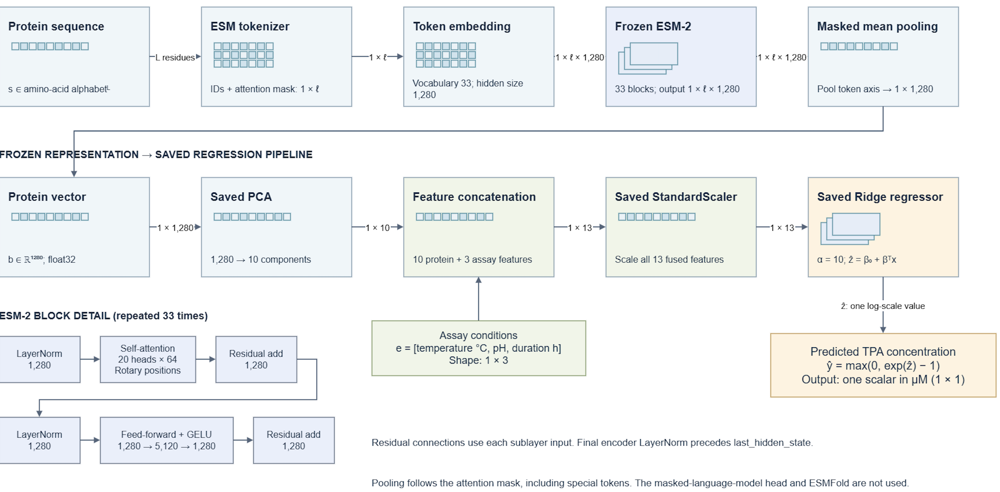
Original slide text (3 paragraphs)
Extracted from the original slide. Equations in this transcript may be linearized; use the explained formulas above.
- System Design
- Department of AI&DS
- October 12, 2026
Slide 22 — Integrated system design
- The sequence branch produces 1,280 raw protein features.
- The condition branch produces 3 features.
- 1283 values is the conceptual raw feature count if these raw inputs are placed side by side.
- The revised bottom line describes the actual controlled-C processing: scale the embedding, reduce it to 10 PCA components, append the three conditions, scale the resulting 13 features, and fit Ridge.
Clarification for the reviewer: PCA acts on the protein block in this controlled pipeline. The 1,283 count is not the dimension entering Ridge. The final input dimension is 13. This slide describes research preprocessing; slide 21 describes the legacy serving path.
Original slide text (13 paragraphs)
Extracted from the original slide. Equations in this transcript may be linearized; use the explained formulas above.
- 22
- Department of AI&DS
- Integrated System Design
- Protein sequence
- pH, temperature,
- duration
- Frozen ESM-2
- 1280 features
- Environmental vector
- 3 features
- Feature concatenation: 1283 values
- 1280 embedding features → embedding scaling → PCA to 10 → concatenate 3 conditions → final scaling of 13 features → Ridge
- October 12, 2026
Slide 23 — Data pipeline
- 462 master rows: the integrated master table’s protein-level entries. This is not the number of confirmed ML observations.
- Nested assay extraction: each master entry may contain several experimental records, so one protein row can yield multiple observations.
- 227 matched rows: the reduced legacy ML records matched retained source evidence.
- Six ambiguous exclusions: source matching did not uniquely establish the intended TPA measurement for these reduced records.
- 221 confirmed observations: the accepted research cohort after those exclusions.
- 25 proteins with embeddings: all accepted protein IDs have available cached representations. Coverage checks do not alone prove full historical checkpoint provenance for every cached vector.
How to present: “462 describes master-table entries, 227 the legacy reduced assay rows, 221 the confirmed research observations, and 25 the unique proteins in those observations.”
Original slide text (16 paragraphs)
Extracted from the original slide. Equations in this transcript may be linearized; use the explained formulas above.
- 23
- Department of AI&DS
- System Design: Data Pipeline
- Master dataset
- 462 protein rows
- Nested assay
- record extraction
- Provenance audit
- 227 matched rows
- Six ambiguous
- records excluded
- 221 confirmed
- TPA observations
- 25 proteins with
- verified embeddings
- October 12, 2026
Slide 24 — Application design
- Sequence and conditions: prediction inputs.
- FastAPI validation: checks the request schema and supported input values.
- Frozen encoder plus saved model: turns an accepted sequence and conditions into a numerical prediction.
- TPA µM: the output quantity and unit.
- React result/error states: display success, invalid input, request failure, or service unavailability appropriately.
- Legacy disclosure: identifies the served model and its unresolved training/evaluation membership.
Recommendation exception: its input consists of conditions, because the candidate sequences/embeddings are already available. A user sequence is not required for ranking.
Original slide text (17 paragraphs)
Extracted from the original slide. Equations in this transcript may be linearized; use the explained formulas above.
- 24
- Department of AI&DS
- System Design: Application
- Sequence +
- assay conditions
- FastAPI input
- validation
- Frozen encoder +
- saved model pipeline
- TPA prediction
- in µM
- React result
- and error states
- Legacy-model
- disclosure
- The served legacy model is separate from the confirmed A/B/C research experiment.
- October 12, 2026
Slide 25 — Base paper 1 architecture figure
The figure contains three panels. “Our proposed pipeline” is wording from the source paper, not a claim that your project implements every illustrated component.
- Panel A, directed evolution: a parent protein is mutated, creating a variant pool. Screening identifies improved candidates, which become parents for another round. “Repeat” closes the loop.
- Panel B, training an in-silico oracle: example sequences have measured fitness labels. A frozen ESM encoder feeds a trainable Attention1D module. Snowflake symbols indicate frozen components; the flame indicates the component being trained. “Minimize” indicates reducing disagreement between predicted and reference fitness. The example values 4.97/2.75/3.14/2.01 and predictions 4.28/1.96/2.74/2.52 belong to this illustration, not EnzAIme’s µM results.
- Panel C, design loop: start with a wild-type sequence; mask positions; use an ESM encoder/head to propose substitutions; score candidates with the oracle; retain the best k; mask again for another round. The example candidate fitness values 4.62, 1.35, 3.08, and 2.47 illustrate scoring and selection. Higher fitness is preferred within that figure’s task.
- Yellow molecular drawing: illustrates a protein structure; it is not a newly predicted EnzAIme structure.
Current usage: your workflow borrows the idea of frozen representations. It currently ranks known proteins with Ridge and does not run this mutation-generation cycle. The authors’ repository distinguishes oracle training from sequence generation.
View original slide figure
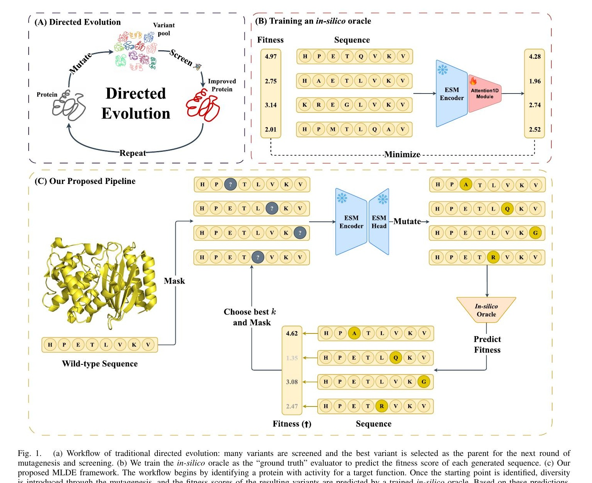
Original slide text (4 paragraphs)
Extracted from the original slide. Equations in this transcript may be linearized; use the explained formulas above.
- 25
- Department of AI&DS
- System Design: Base Paper 1
- October 12, 2026
Slide 26 — Base paper 1 workflow
- Parent population: the candidate sequences entering a generation.
- Random/importance masking: selects positions to alter.
- ESM proposals: creates candidate amino-acid replacements.
- Attention1D oracle: predicts candidate fitness.
- Top-k selection: retains the k preferred candidates for the next iteration.
- Next round: repeats search from those selected parents.
Here k is a candidate count, whereas k elsewhere in your mathematical notation indexes a validation fold. Symbols must be interpreted within their local context. The caption correctly labels this evolution loop as future work in EnzAIme.
Original slide text (17 paragraphs)
Extracted from the original slide. Equations in this transcript may be linearized; use the explained formulas above.
- 26
- Department of AI&DS
- Workflow: Base Paper 1
- Parent protein
- population
- Random / importance
- masking
- ESM-2 residue
- proposals
- Attention1D
- fitness oracle
- Top-k candidate
- selection
- Next evolution
- round
- Conceptual summary of Tran and Hy. This directed-evolution loop is future work in EnzAIme.
- October 12, 2026
Slide 27 — Base paper 2 architecture figures
First figure, MPMO framework: P_1 through P_M are search populations associated with objectives f_1 through f_M. The subscript m identifies one population/objective. “Population update” creates new candidates P_(m,new). New individuals contribute to archive A, which is updated to A_new. The information-sharing loop allows retained candidate information to affect later population updates.
Second figure, IMPMO-DE: fragment assembly initializes candidate structures. A parent population produces a trial population through adaptive archive-based mutation. Mixed individual transfer creates or combines offspring information. An evolvable archive retains candidates. Parameter updates adapt the search settings, and the loop repeats while FE < MAX_FES.
- FE: function evaluations consumed by the search.
- MAX_FES: the allotted evaluation budget.
- Decision “Yes”: continue population updates.
- Decision “No”: select the predicted structure and end.
- Colored protein images: illustrate successive structural candidate sets, not laboratory validation or structures generated by this project.
Current usage: this is explanatory literature material. The current EnzAIme inference pipeline has no IMPMO-DE stage. Do not invent names or formulas for the paper’s individual energy objectives unless you have checked the original methods.
View original slide figures
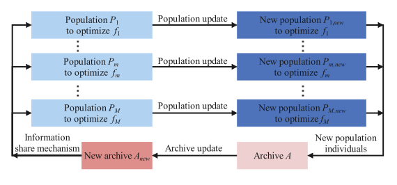
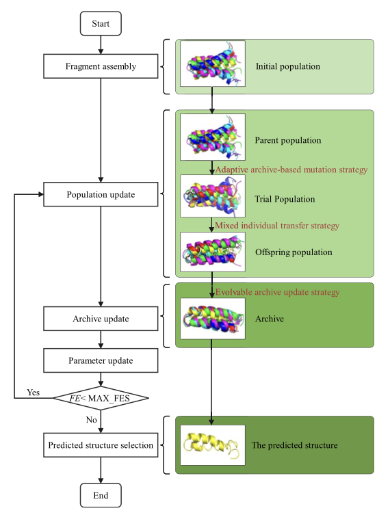
Original slide text (6 paragraphs)
Extracted from the original slide. Equations in this transcript may be linearized; use the explained formulas above.
- 27
- Department of AI&DS
- System Design: Base Paper 2
- Fig 1.2 Major Structure of an MPMO framework
- Fig 1.3 Flowchart of IMPMO-DE
- October 12, 2026
Slide 28 — Base paper 2 workflow
- Sequence/torsion representation: represents candidate conformations using sequence-related structural degrees of freedom; torsion angles describe rotations around bonds.
- Three energy objectives: the slide states that three objectives assess candidates. It does not list their exact mathematical definitions.
- Differential-evolution populations: candidate solutions evolve using differences between other candidate vectors.
- Adaptive mutation and mixed transfer: guide candidate exploration and information exchange.
- Archive update: retains candidate information across iterations.
- Candidate structures: the intended output of the source method.
How to present: “This is a possible future structural extension. Our current output is a concentration estimate, and we have not integrated this structure-search algorithm.”
Original slide text (17 paragraphs)
Extracted from the original slide. Equations in this transcript may be linearized; use the explained formulas above.
- 28
- Department of AI&DS
- Workflow: Base Paper 2
- Sequence and
- torsion representation
- Three energy
- objectives
- Differential-evolution
- populations
- Adaptive mutation
- and mixed transfer
- Evolvable archive
- update
- Candidate protein
- structures
- Conceptual summary of Hong et al. IMPMO-DE is not implemented in the current prototype.
- October 12, 2026
Slide 29 — Research pipeline, steps 1–7
Inputs: D_0 is the original reduced assay table; R is retained source evidence; the embedding index maps protein IDs to stored vectors. Outputs: D is the confirmed cohort, accompanied by controlled evaluation and out-of-fold error analysis.
- Audit every record: connect its protein, conditions, substrate, analyte, and measurement to source evidence.
- Partition classifications: separate confirmed records from ambiguous or unresolved categories. An ambiguous record is not automatically a scientifically false measurement.
- Construct D: use only confirmed TPA/PET records for the controlled study.
- Standardize units: concentration in µM and duration in hours.
- Retain flags: record duplicate, repeated-condition, and zero-duration information instead of silently deleting observations.
- Check availability and eligibility: ensure sequences and embeddings exist, numerical values are usable, and proposed feature columns are justified.
- Build matrices:
E ∈ ℝ^(N×3), B ∈ ℝ^(N×1280), zᵢ = log(1 + yᵢ), gᵢ = pᵢ
Equation in LaTeX
E\in\mathbb R^{N\times3},\quad B\in\mathbb R^{N\times1280},\quad z_i=\log(1+y_i),\quad g_i=p_i.- N=221 records; each row of E contains temperature, pH, duration.
- Row i of B is the embedding for protein p_i. The same protein vector repeats across its assay rows.
- y_i is the standardized concentration; z_i is its natural-log transformation.
- g_i supplies the protein grouping key for splitting.
Actual usage: provenance construction, confirmed-dataset construction, and controlled-ablation scripts perform these roles. log1p has no learned parameters; leakage controls apply to fitting scalers, PCA, and the regression model.
View original slide figure
Original slide text (17 paragraphs)
Extracted from the original slide. Equations in this transcript may be linearized; use the explained formulas above.
- 29
- Department of AI&DS
- Algorithm: Research Pipeline
- Input: original assay records 𝐷0, source records 𝑅, existing protein embeddings.Output: confirmed dataset 𝐷, controlled evaluation, out-of-fold error analysis.
- RESEARCH_PIPELINE(D₀, R, embedding_index)
- 1. Audit source provenance for every record in D₀.
- 2. Partition records into confirmed, ambiguous, and other unresolved categories.
- 3. Construct D using only confirmed TPA/PET records.
- 4. Convert confirmed targets to µM and durations to hours.
- 5. Retain duplicate, repeated-condition, and zero-duration flags.
- 6. Check sequence availability, feature eligibility, and embedding coverage.
- 7. Construct:
- E = environmental matrix, shape N × 3
- B = embedding matrix, shape N × 1280
- z = log1p(y)
- g = protein identifiers
- October 12, 2026
Slide 30 — Research pipeline, steps 8–12
- Prepare shared K folds: K=5. Save/reuse the same grouping for A, B, and C so feature comparisons face the same held-out proteins.
- Fit per configuration and fold: learn preprocessing and Ridge on training rows; predict only held-out rows. Store fold results.
- Two aggregations: average defined fold metrics, and separately calculate metrics over all out-of-fold predictions.
- Analyze errors: identify failures by record, protein, fold, and repeated conditions.
- Report limitations: include missing/undefined metrics, provenance limitations, and configuration differences.
Returned objects: a confirmed dataset, fold description, OOF predictions, evaluation summary, and error analysis. The slide is an overall workflow description; these outputs are spread across several scripts and saved files, not necessarily returned by one literal function named RESEARCH_PIPELINE.
Why no context block D? PET substrate is effectively constant, and material descriptions are inconsistent/source-specific. Adding them without defensible encoding and validation could add confounding rather than useful generalizable information.
Original slide text (14 paragraphs)
Extracted from the original slide. Equations in this transcript may be linearized; use the explained formulas above.
- 30
- Department of AI&DS
- Algorithm: Research Pipeline cond,.
- 8. Prepare one shared set of K protein-grouped folds.
- 9. For each configuration c ∈ {A, B, C}:
- fit preprocessing and Ridge within each training fold
- predict only the corresponding held-out fold
- retain predictions and fold metrics
- 10. Aggregate defined fold metrics and compute pooled OOF metrics separately.
- 11. Analyze errors by record, protein, fold, and repeated conditions.
- 12. Report provenance, undefined metrics, limitations, and configuration differences.
- Return D, fold_manifest, OOF_predictions, evaluation, error_analysis.
- Context features are not included in the current controlled A/B/C experiment: PET substrate is constant, while material descriptions are heterogeneous and source-specific.
- October 12, 2026
Slide 31 — Fold preparation and leakage controls
The first equation is:
{pᵢ : i ∈ Iₖᵗʳ} ∩ {pᵢ : i ∈ Iₖᵗᵉ} = ∅Equation in LaTeX
\{p_i:i\in I_k^{tr}\}\cap\{p_i:i\in I_k^{te}\}=\varnothing.- i indexes a record; p_i is its protein ID.
- k indexes the fold; I_k^tr and I_k^te are its training and held-out record-index sets.
- Braces form sets of protein IDs; intersection finds shared members; the empty-set symbol means none are shared.
Meaning: a protein’s records cannot be partly training and partly evaluation within a fold.
The second pair is:
⋃ₖ₌₁ᴷ Iₖᵗᵉ = {1,…,N}; Iₖᵗᵉ ∩ Iℓᵗᵉ = ∅ for k ≠ ℓEquation in LaTeX
\bigcup_{k=1}^{K}I_k^{te}=\{1,\ldots,N\},\qquad I_k^{te}\cap I_\ell^{te}=\varnothing\quad(k\ne\ell).The union covers all records, and distinct held-out sets do not overlap. Thus every record receives exactly one OOF prediction per configuration. One-based mathematical indices and zero-based Python indices describe the same splitting principle.
Pseudocode: extract protein IDs into g; ask GroupKFold for K=5 splits; check protein intersections; record row/protein membership and sizes; reuse the splits across configurations.
Actual project nuance: grouping uses protein IDs, not sequence-similarity clusters. Different IDs with related sequences can appear across train/test. Also, five folds need not have equal numbers of proteins or records. The confirmed fold sizes are 75, 37, 37, 36, and 36 observations.
View original slide figure
Original slide text (18 paragraphs)
Extracted from the original slide. Equations in this transcript may be linearized; use the explained formulas above.
- 31
- Department of AI&DS
- Algorithm: Fold Preparation
- Records sharing a protein identifier must stay together:
- 𝑝𝑖:𝑖∈𝐼𝑘𝑡𝑟∩𝑝𝑖:𝑖∈𝐼𝑘𝑡𝑒=∅.
- Each record must appear in exactly one held-out fold:
- 𝑘=1𝐾𝐼𝑘𝑡𝑒=1,…,𝑁, 𝐼𝑘𝑡𝑒∩𝐼𝓁𝑡𝑒=∅ 𝑘≠𝓁.
- PREPARE_FOLDS(D, K = 5)
- g ← protein_id column of D
- F ← GroupKFold(K).split(record_indices, groups = g)
- For each fold k with indices (Iᵗʳₖ, Iᵗᵉₖ):
- Assert training and held-out protein sets do not overlap.
- Record training/test indices, protein IDs, and record counts.
- Assert every record occurs in exactly one held-out fold.
- Reuse F unchanged for configurations A, B, and C.
- Return F.
- The implementation groups by protein ID. It does not additionally group different IDs by sequence similarity.
- October 12, 2026
Slide 32 — Evaluation equations
Let V be a held-out set and n=|V| its number of records. y_i is measured concentration; y-hat_i is predicted concentration, after back-transformation to µM.
rᵢ = yᵢ − ŷᵢ
Equation in LaTeX
r_i=y_i-\hat y_i.A positive residual indicates underprediction; a negative residual indicates overprediction. Residuals have µM units.
MAE = (1/n) Σᵢ∈V |rᵢ|
Equation in LaTeX
\mathrm{MAE}=\frac1n\sum_{i\in V}|r_i|.MAE: average error magnitude. Absolute values prevent positive and negative errors from cancelling. Each extra µM of error contributes linearly. Lower is better.
RMSE = √[(1/n) Σᵢ∈V rᵢ²]
Equation in LaTeX
\mathrm{RMSE}=\sqrt{\frac1n\sum_{i\in V}r_i^2}.RMSE: square errors, average them, and take the square root. Squaring gives large errors more influence; the square root returns the result to µM. Lower is better. For the same records RMSE is at least MAE.
R² = 1 − [Σᵢ∈V rᵢ²] / [Σᵢ∈V (yᵢ − ȳᵥ)²]
Equation in LaTeX
R^2=1-\frac{\sum_{i\in V}r_i^2}{\sum_{i\in V}(y_i-\bar y_V)^2}.Here y-bar_V is the mean measured target in that held-out set. The numerator is SSE (sum of squared errors); the denominator is SST (target variation around the held-out mean). R²=1 is perfect; R²=0 matches the squared error of that held-out-mean reference; R²<0 is worse. The reference uses the held-out targets for metric definition and is not a deployable predictor. R² has no finite lower bound. When SST=0, the mathematical expression is undefined.
ρₛ = Corr(rank(y), rank(ŷ))
Equation in LaTeX
\rho_s=\operatorname{Corr}(\operatorname{rank}(y),\operatorname{rank}(\hat y)).Spearman: compare the ordering of actual and predicted values using their ranks. Ties receive ranks handled by the statistical routine. Values approach +1 for consistent ordering and −1 for reversed ordering. Constant actual values or constant predictions make correlation undefined. A useful rank correlation does not guarantee accurate concentration magnitudes.
Illustrative calculation: y=[10,20,30], predictions=[12,18,24] gives residuals [−2,2,6], MAE=10/3=3.33 µM, RMSE=sqrt(44/3)=3.83 µM, and R²=1−44/200=0.78. Spearman is 1 because the ordering is preserved. These are teaching numbers, not project results.
Actual usage: the ablation computes MAE/RMSE/R² using scikit-learn and guards Spearman against constant inputs. The error-analysis script explicitly marks zero-SST R² and constant-input Spearman undefined. The original ablation calls scikit-learn’s r2_score directly, so the slide’s explicit undefined-R² procedure most precisely describes the diagnostic implementation.
View original slide figure
Original slide text (15 paragraphs)
Extracted from the original slide. Equations in this transcript may be linearized; use the explained formulas above.
- 32
- Department of AI&DS
- Algorithm: Evaluation
- For a held-out set 𝑉, define residuals:
- 𝑟𝑖=𝑦𝑖−𝑦ˆ𝑖.
- Then:
- MAE=1𝑉𝑖∈𝑉𝑟𝑖, RMSE=1𝑉𝑖∈𝑉𝑟𝑖2,𝑅2=1−𝑖∈𝑉𝑟𝑖2𝑖∈𝑉𝑦𝑖−𝑦¯𝑉2,𝜌𝑠=Corrrank𝑦,rank𝑦ˆ.
- MAE and RMSE use µM; 𝑅2and Spearman correlation are dimensionless.
- EVALUATE(y, ŷ, fold_ids)
- For each fold k:
- Calculate MAEₖ and RMSEₖ.
- Calculate R²ₖ unless the actual targets are constant.
- Calculate Spearmanₖ unless actual targets or predictions are constant.
- Retain an explicit reason for every undefined metric.
- October 12, 2026
Slide 33 — Fold summaries versus pooled metrics
- M: one metric, such as MAE.
- J: the set of folds where M has a finite, defined value.
- Mean-fold: average those defined values, with one vote per included fold.
- Sample SD:
M̄ = (1/|J|) Σₖ∈J Mₖ; sₘ = √[Σₖ∈J (Mₖ − M̄)² / (|J| − 1)]
Equation in LaTeX
\bar M=\frac1{|J|}\sum_{k\in J}M_k,\qquad s_M=\sqrt{\frac{\sum_{k\in J}(M_k-\bar M)^2}{|J|-1}}.This sample-SD expression requires at least two defined folds. The implementation uses ddof=1 when possible. SD describes fold variation, not a confidence interval or uncertainty for one new prediction.
- |J|/K: state how many folds contributed. B’s Spearman uses 4/5 folds.
- Pooled: assemble every OOF prediction once and compute each metric on that full vector.
(1/K) Σₖ RMSEₖ ≠ √[(1/N) Σᵢ rᵢ²] in general
Equation in LaTeX
\frac1K\sum_k\mathrm{RMSE}_k\ne\sqrt{\frac1N\sum_i r_i^2}\quad\text{in general}.This inequality reflects both nonlinear square roots and unequal fold sizes. Pooled RMSE equals sqrt(sum_k n_k RMSE_k² / N). Pooled MAE is the record-count-weighted fold MAE. Pooled R² uses the overall target mean and variance, so it is not a simple average of fold R².
Actual usage: controlled fold summaries and the diagnostic pooled-results file are intentionally separate. The legacy saved variation statistics do not have equally complete producing-run evidence.
View original slide figure
Original slide text (15 paragraphs)
Extracted from the original slide. Equations in this transcript may be linearized; use the explained formulas above.
- 33
- Department of AI&DS
- Algorithm: Evaluation Cond.,
- For each metric M:
- J ← folds where M is defined
- mean_fold(M) ← mean of M over J
- sd_fold(M) ← sample standard deviation over J
- Report |J| / K.
- Concatenate all OOF predictions.
- Compute pooled metrics once over the concatenated records.
- Return fold metrics, mean-fold summaries, pooled metrics.
- Mean-fold and pooled metrics are different quantities. In general:
- 1𝐾∑𝑘RMSE𝑘≠1𝑁∑𝑖𝑟𝑖2.
- The controlled study uses sample standard deviation for fold summaries. This does not establish how the legacy model’s saved variation statistics were originally computed.
- October 12, 2026
Slide 34 — Candidate evidence counts
nₚ = Σᵢ₌₁ᴺ 𝟙[pᵢ = p]
Equation in LaTeX
n_p=\sum_{i=1}^{N}\mathbf1[p_i=p].- p is a candidate protein; p_i is the protein ID of record i.
- N is the number of records in the dataset being counted: here the confirmed cohort, N=221.
- The indicator is 1 when the record belongs to p and 0 otherwise.
- Summation counts accepted assay records for that protein.
Actual usage: load_candidates() in the recommender reads the confirmed CSV and increments activity_record_count. This is evidence quantity, not model confidence, number of unique publications, or number of independent biological replicates. It does not change the legacy model coefficients or directly enter the score.
The same 25 protein/sequence pairs were retained when the evidence source changed. Confirmed counts for affected proteins are PET46 2 instead of 3, CalB 20 instead of 22, HiC 75 instead of 77, and SM14est 7 instead of 8.
Notation correction: the dangling q_p at the end of this slide belongs with the prediction equation on slide 35.
View original slide figures
Original slide text (12 paragraphs)
Extracted from the original slide. Equations in this transcript may be linearized; use the explained formulas above.
- 34
- Department of AI&DS
- Algorithm: Candidate Exploration
- Candidates and evidence counts come from 𝐷; scores come from 𝑓𝐿:
- 𝑛𝑝=𝑖=1𝑁1𝑝𝑖=𝑝,𝑞𝑝
- October 12, 2026
- 𝑛𝑝: number of dataset records associated with protein 𝑝.
- 𝑁: total number of records in the dataset being counted.
- 𝑖: index of a record, from 1 to 𝑁.
- 𝑝𝑖: protein associated with record 𝑖.
- 𝟏𝑝𝑖=𝑝: indicator function. It equals 1 when record 𝑖 belongs to protein 𝑝, and 0 otherwise.
- : adds those indicator values, giving the count for protein 𝑝.
Slide 35 — Legacy candidate score
qₚ = max(0, exp{f_L(S_L([P_L(bₚ); e*]))} − 1)
The subscript L identifies the legacy transforms/model.Equation in LaTeX
q_p=\max\left(0,\exp\left[f_L\left(S_L\left([P_L(\mathbf b_p);\mathbf e^*]\right)\right)\right]-1\right).Read this expression from the inside outward:
- b_p: the cached 1,280-dimensional embedding of candidate p.
- P_L(b_p): the saved legacy PCA produces 10 components.
- e-star: the user’s requested [temperature, pH, duration] vector. The star denotes the requested scenario; it does not indicate an optimized condition.
- [ ; ]: concatenate the 10 components and 3 conditions, forming 13 values.
- S_L: apply the saved 13-feature scaler.
- f_L: the saved legacy Ridge returns a log(1+concentration) prediction.
- exp(.)−1: invert log1p and return to µM;
np.expm1implements this numerically. - max(0,.): clip any negative converted output to zero. This clips all negative outputs, not only rounding artifacts.
The L subscript identifies legacy components. They are already fitted and are not refitted when the user requests a score. q_p is a concentration estimate, not a probability or experimentally proven fitness.
Actual usage: this order matches Predictor.predict. It differs from controlled C, which includes an embedding scaler before its fold-fitted PCA. Exact legacy training/evaluation row membership remains unresolved. Put q_p= at the start of this slide’s equation so the expression is self-contained.
A further limitation follows from the code: PCA, scaling, and Ridge are affine/linear operations before exponentiation. With the current concatenated features, the log prediction can be written as a protein contribution plus a condition contribution plus an intercept. The model has no explicit protein-by-condition interaction terms. Changing conditions shifts every candidate's log prediction by the same amount. Because exp is monotonic, the exact mathematical ranking stays the same across conditions, except that clipping can create ties; numerical effects may also affect near-ties. Thus condition inputs change concentration estimates, but this architecture does not model different condition-response slopes for different proteins. This is an algebraic consequence of the inspected inference path, not a newly executed experiment.
View original slide figures
Original slide text (14 paragraphs)
Extracted from the original slide. Equations in this transcript may be linearized; use the explained formulas above.
- 35
- Department of AI&DS
- Algorithm: Candidate Exploration Cont.,
- =max 0, exp 𝑓𝐿 𝑆𝐿𝑃𝐿𝐛𝑝;𝐞∗−1
- October 12, 2026
- 𝑞𝑝: the model’s predicted product concentration for protein 𝑝, in 𝜇M.
- 𝐛𝑝: the protein’s frozen ESM-2 representation (embedding).
- 𝑃𝐿: the legacy model’s saved PCA transformation. In this project, it reduces the embedding to 10 components.
- 𝐞∗: the input reaction-condition vector, containing temperature, pH, and duration.
- ; : concatenation: join the reduced protein representation and condition vector into one feature vector.
- 𝑆𝐿: the legacy model’s saved feature scaler, applied to the concatenated features.
- 𝑓𝐿: the legacy regression model (Ridge), which predicts on the log1+concentration scale.
- exp⋅−1: converts the prediction back from the log scale to concentration.
- max0,⋅: clips a negative converted prediction to zero.
Slide 36 — Candidate exploration algorithm
- D: confirmed candidate/evidence dataset; embedding_index: mapping to existing vectors; e-star: requested conditions; m: number of returned candidates.
- Validate: check pH, numeric temperature, positive duration, and requested count. The schema allows pH 0–14, duration >0, and 1≤m≤10; this is input validity, not proof that every accepted condition is scientifically supported.
- No user sequence required: all candidates already have known representations.
- Unique proteins: load one candidate per protein ID, not one candidate per assay row.
- Score each candidate: pass its embedding and the same requested conditions through the legacy predictor.
- Attach n_p and provenance: tell the user what confirmed evidence exists.
- Sort descending: larger predicted concentration receives a higher displayed rank.
- Return top m: the frontend currently requests five, while the API allows up to ten.
Caution to explain: a larger prediction does not establish laboratory superiority. Repeated records increase the displayed evidence count without necessarily supplying independent evidence at the exact requested conditions.
The current additive Ridge structure also limits condition-specific reordering of proteins, as explained on slide 35. A future genuinely protein-specific response surface would need justified interaction features or an appropriate nonlinear model, followed by grouped validation; changing the model automatically is not part of this guide.
View original slide figure
Original slide text (18 paragraphs)
Extracted from the original slide. Equations in this transcript may be linearized; use the explained formulas above.
- 36
- Department of AI&DS
- Algorithm: Candidate Exploration Cond,.
- EXPLORE_CANDIDATES(D, embedding_index, e*, m)
- Validate pH, temperature, duration, and requested count.
- Do not require a user-supplied sequence.
- C ← unique proteins from D
- For each protein p ∈ C:
- bₚ ← existing indexed embedding
- qₚ ← LEGACY_PREDICT(bₚ, e*)
- nₚ ← number of confirmed records for p
- Attach confirmed evidence provenance.
- Label qₚ as a legacy-model computational prediction.
- State unresolved training/evaluation row membership.
- Sort candidates by qₚ in descending order.
- Assign ranks and return the first m candidates.
- The API permits 1≤𝑚≤10. Rankings indicate computational estimates under the supplied conditions, not experimentally established superiority.
- October 12, 2026
Slide 37 — Module overview
- Dataset construction/provenance: establishes usable targets and sources.
- Frozen representation: converts each sequence into reusable numerical features.
- Fusion/controlled prediction: transforms approved feature blocks and fits Ridge in grouped folds.
- Validation/error analysis: evaluates held-out performance and identifies failures.
- API/responsive UI: exposes prediction, ranking, and saved evaluation with input and error handling.
- Mutation/structure: planned validation and design modules. Some data-extraction work may exist, but that does not establish a trained, validated mutation or structure predictor.
Original slide text (10 paragraphs)
Extracted from the original slide. Equations in this transcript may be linearized; use the explained formulas above.
- 37
- Department of AI&DS
- Modules
- 1. Dataset construction and provenance audit.
- 2. Frozen protein representation.
- 3. Feature fusion and controlled prediction.
- 4. Validation and error analysis.
- 5. Prediction/recommendation API and responsive UI.
- 6. Mutation and structure modules: planned.
- October 12, 2026
Slide 38 — Confirmed dataset table
- File:
data/processed/tpa_pet_ml_confirmed.csvis the current confirmed research dataset. - 221 observations: individual retained assay records.
- 25 proteins: unique protein IDs across those observations.
- target_value_standardized: TPA concentration converted to µM. Here “standardized” means unit-normalized; it does not mean a zero-mean/unit-variance target.
- temperature_c, ph, duration_hours: the three environmental predictor columns, in that order in the controlled code.
Actual use: research loads rows from this file; candidate metadata and evidence counts also come from it. Its use for recommendations does not establish it as the legacy model’s training cohort.
Original slide text (16 paragraphs)
Extracted from the original slide. Equations in this transcript may be linearized; use the explained formulas above.
- 38
- Department of AI&DS
- 1. Dataset Construction
- Field
- Confirmed research dataset
- File
- data/processed/tpa_pet_ml_confirmed.csv
- Observations
- 221
- Unique proteins
- 25
- Target
- target_value_standardized, µM
- Environmental inputs
- temperature_c, ph, duration_hours
- October 12, 2026
Slide 39 — Data sources and roles
- PAZy/retained assay records: experimental activity evidence and assay context supporting this cohort.
- UniProt: protein identity and sequence mapping.
- BRENDA: collected enzyme-property evidence. It does not add extra supervised labels to the confirmed 221-row study simply by being listed.
- FireProtDB: potentially relevant to mutation/stability data, but sufficient usable mutation/DDG labels were not established for the current task. DDG means a change in free energy, which is distinct from TPA concentration.
- PDB: a potential source of structural evidence for future work.
How to present: “The sources have different roles. We do not merge every value from every database into one target column.”
Original slide text (16 paragraphs)
Extracted from the original slide. Equations in this transcript may be linearized; use the explained formulas above.
- 39
- Department of AI&DS
- 1. Data Sources and Roles
- Source
- Current role
- PAZy / retained assay records
- Activity evidence and source context
- UniProt
- Sequence and protein identity mapping
- BRENDA
- Collected property evidence; not extra labels
- FireProtDB
- Insufficient current mutation/DDG labels
- PDB
- Future structural evidence
- October 12, 2026
Slide 40 — Activity provenance audit
- 7,195 embedded assay records: records available within the integrated workflow. This does not mean all 7,195 became training examples or that every source claim received manual laboratory verification.
- 227 matched original rows: the reduced legacy observations could be linked to retained source records.
- 221 confirmed: analyte identity and relevant provenance met the acceptance rule.
- Six ambiguous: remained excluded from the confirmed study.
- Zero unresolved: this is a specific audit classification count. It can coexist with six records in the separate
TPA_AMBIGUOUScategory and with unresolved legacy-model training lineage.
Actual evidence: the audit summary reports 227 matched, 221 TPA_CONFIRMED, 6 TPA_AMBIGUOUS, 0 unmatched, and 0 UNRESOLVED. These classifications answer a dataset-source question, not the artifact-training-membership question.
Original slide text (9 paragraphs)
Extracted from the original slide. Equations in this transcript may be linearized; use the explained formulas above.
- 40
- Department of AI&DS
- 1. Activity Provenance Audit
- • 7,195 embedded assay records reviewed in the integration workflow.
- • All 227 original ML rows matched retained source records.
- • 221 records confirmed as TPA.
- • Six ambiguous records remain excluded.
- • No unresolved provenance rows in the reported audit.
- October 12, 2026
Slide 41 — Unit and duration normalization
- Convert all accepted concentration values to µM so an error value has one interpretable unit.
- Multiply mM by 1,000, since a millimole is 1,000 micromoles.
- Convert days to hours using 24 hours/day.
- Preserve original measurements and units in the source trail so the conversion can be checked.
- Equal units do not equal identical experimental protocols. Differences in enzyme amounts, PET form, and methods can remain after conversion.
Illustrative examples: 2 mM=2,000 µM; 2 days=48 hours. These are conversion examples rather than additional observations.
Original slide text (9 paragraphs)
Extracted from the original slide. Equations in this transcript may be linearized; use the explained formulas above.
- 41
- Department of AI&DS
- 1. Units and Duration Normalization
- • Standardized TPA target unit: µM.
- • mM concentrations convert by multiplying by 1,000.
- • Duration values use hours. Days convert by multiplying by 24.
- • Retained source JSON records the original measurement.
- • Unit consistency does not establish assay comparability.
- October 12, 2026
Slide 42 — Repeated assay conditions
- A repeated protein-condition group contains rows sharing the modeled protein, temperature, pH, and duration.
- The confirmed analysis identifies 48 such groups; 47 have different recorded targets.
- Additional metadata may differ, so matching modeled inputs do not prove the records are identical experimental replicates.
- Metadata differences do not by themselves prove the cause of the target difference.
- The primary analysis preserves records and their provenance rather than selecting a convenient target or deleting inconvenient observations.
Model implication: if two rows have identical modeled inputs, a deterministic predictor must give them the same prediction. It cannot explain target variation due to variables it does not receive. That is one reason additional assay metadata matters.
Original slide text (9 paragraphs)
Extracted from the original slide. Equations in this transcript may be linearized; use the explained formulas above.
- 42
- Department of AI&DS
- 1. Repeated Assay Conditions
- • 48 repeated protein-condition groups identified.
- • 47 groups have different recorded targets.
- • Additional assay metadata can differ across records.
- • These differences do not establish a causal explanation.
- • Primary analysis retains the observations and provenance.
- October 12, 2026
Slide 43 — Feature eligibility
- Approved inputs: embeddings, temperature, pH, duration.
- Material descriptions: heterogeneous text may encode publication-specific patterns and require careful harmonization.
- Constant PET substrate: a feature with the same value for every row cannot distinguish observations within this study.
- Salinity/COD/BOD absent: chemical oxygen demand and biochemical oxygen demand are broader water-quality measures; neither they nor salinity are available predictor columns in the confirmed schema.
- Protein grouping: prevents repeated records of the same protein ID from spanning a fold’s train/test boundary, while leaving other sources of similarity/confounding possible.
Actual usage: the A/B/C experiment does not secretly supply these missing context variables to the model.
Original slide text (9 paragraphs)
Extracted from the original slide. Equations in this transcript may be linearized; use the explained formulas above.
- 43
- Department of AI&DS
- 1. Feature Eligibility
- • Current approved inputs: ESM-2, temperature, pH and duration.
- • Material descriptions are heterogeneous and source-specific.
- • Substrate is effectively constant PET in this experiment.
- • Salinity, COD and BOD are absent from the confirmed schema.
- • Protein-grouped validation limits identity leakage.
- October 12, 2026
Slide 44 — Provenance matching and conversion equations
Source matching: use protein identity, assay conditions, substrate, and compatible measurement values. Numeric equality alone cannot prove that a value refers to TPA: different products may share the same numerical result.
For confirmed TPA values:
yµM = v if u is µM or µmol/L
= 1000v if u is mM
= 1000v / 166.13 if u is µg/mLEquation in LaTeX
y_{\mu M}=\begin{cases}v,&u\in\{\mu M,\mu mol/L\},\\1000v,&u=mM,\\1000v/166.13,&u=\mu g/mL.\end{cases}- v: the original numerical concentration.
- u: its reported unit.
- y_µM: converted concentration in micromoles/litre.
- 166.13: the molecular weight used by the project for TPA, in g/mol.
Why the mass conversion works: 1 µg/mL equals 1 mg/L, or 0.001 g/L. Divide by 166.13 g/mol to obtain mol/L, then multiply by 1,000,000 to obtain µmol/L. The factors combine to 1000/166.13. The analyte must be established first because another chemical may have a different molecular weight. Illustratively, 166.13 µg/mL of TPA converts to 1,000 µM.
For duration:
tₕₒᵤᵣₛ = t if the reported unit is hours
= 24t if the reported unit is daysEquation in LaTeX
t_{hours}=\begin{cases}t,&u_t=h,\\24t,&u_t=d.\end{cases}Here t is the reported duration, u_t its unit, h hours, and d days. These cases describe the units handled in this workflow. Do not assume unlisted units are automatically converted.
Actual usage: build_tpa_provenance_audit.py defines MW_TPA=166.13 and checks analyte identity before the relevant conversion. Unit normalization precedes modeling.
View original slide figure
Original slide text (9 paragraphs)
Extracted from the original slide. Equations in this transcript may be linearized; use the explained formulas above.
- 44
- Department of AI&DS
- Source matching uses protein identity, assay conditions, substrate, and numeric measurement compatibility. Numeric equality alone does not establish analyte identity.
- For confirmed TPA measurements:
- 𝑦𝜇𝑀=𝑣,𝑢∈𝜇𝑀,𝜇𝑚𝑜𝑙/𝐿,1000𝑣,𝑢=𝑚𝑀,1000𝑣/166.13,𝑢=𝜇𝑔/𝑚𝐿.
- For the currently handled duration units:
- 𝑡hours=𝑡,𝑢𝑡=ℎ,24𝑡,𝑢𝑡=𝑑.
- Representation
- October 12, 2026
Slide 45 — Frozen ESM-2 representation
- Checkpoint identity:
facebook/esm2_t33_650M_UR50D. - Frozen: the code sets evaluation mode, disables parameter gradients, and encodes within
torch.no_grad(). The PET labels do not update ESM-2 weights. - 1280 dimensions: each sequence becomes 1,280 learned numerical features, not 1,280 physical measurements with individually assigned biochemical meanings.
- 25 cached embeddings: one stored vector is available for each confirmed protein.
- No NaN/infinite values: a numerical usability check. It does not demonstrate that the vectors predict TPA well or fully recover their historical generation provenance.
Actual usage: the encoder chooses CUDA/float16 if available, otherwise CPU/float32, then returns a float32 NumPy vector. Device/precision/checkpoint choices matter for reproducibility.
Original slide text (9 paragraphs)
Extracted from the original slide. Equations in this transcript may be linearized; use the explained formulas above.
- 45
- Department of AI&DS
- 2. Frozen ESM-2 Representation
- • Model: facebook/esm2_t33_650M_UR50D.
- • Frozen feature extractor with no current fine-tuning.
- • 1280-dimensional representation per protein.
- • All 25 confirmed proteins have cached embeddings.
- • Reported checks found no NaN or infinite values.
- October 12, 2026
Slide 46 — Masked mean pooling equation
Hₚ ∈ ℝ^(ℓₚ×1280) bₚ = [Σⱼ₌₁^ℓₚ aₚⱼ Hₚⱼ] / max(Σⱼ₌₁^ℓₚ aₚⱼ, ε)
Equation in LaTeX
H_p\in\mathbb R^{\ell_p\times1280},\qquad \mathbf b_p=\frac{\sum_{j=1}^{\ell_p}a_{pj}\mathbf H_{pj}}{\max(\sum_{j=1}^{\ell_p}a_{pj},\epsilon)}.- p: protein identity.
- ell_p: encoded token length after truncation, not necessarily original residue length.
- H_p: matrix containing one 1,280-value hidden-state vector per token.
- j: token position; H_pj: the vector at that position.
- a_pj: the binary attention mask: 1 for included tokens, 0 for padding. In the current implementation it is a mask, not a learned importance score.
- Numerator: multiply each token vector by its mask, then sum vectors component by component.
- Denominator: count included tokens; epsilon=10^-9 is the code’s lower bound to prevent division by zero.
- b_p: the resulting 1,280-dimensional sequence vector.
Illustrative calculation: with two-dimensional token vectors [2,4], [4,8], and padding [100,100], and mask [1,1,0], the result is ([2,4]+[4,8])/2=[3,6]. The real model averages 1,280 dimensions in the same way.
Actual usage: the tokenizer truncates to at most 1,024 tokens. last_hidden_state has a batch dimension; the code expands the mask over hidden dimensions, sums over tokens, clamps counts, divides, and removes the one-item batch dimension. Special tokens with mask value 1 are included. The masked-language modeling operation in the base paper’s mutation loop is a different concept from this padding mask.
View original slide figures
Original slide text (16 paragraphs)
Extracted from the original slide. Equations in this transcript may be linearized; use the explained formulas above.
- 46
- Department of AI&DS
- 2. Frozen ESM-2 Representation Cond,.
- Let 𝐇𝑝∈ℝ𝓁𝑝×1280 be token hidden states and 𝑎𝑝𝑗 the attention mask:
- 𝐛𝑝=𝑗=1𝓁𝑝𝑎𝑝𝑗𝐇𝑝𝑗max𝑗=1𝓁𝑝𝑎𝑝𝑗,𝜖.
- Here 𝓁𝑝 is the encoded token count after truncation, rather than necessarily the full sequence length.
- October 12, 2026
- 𝐛𝑝: the final, fixed-size embedding for protein 𝑝.
- ℓ𝑝: the number of token positions in the encoded protein sequence.
- 𝑗: a position in that sequence.
- 𝐇𝑝𝑗: the ESM-2 hidden-state vector at position 𝑗 for protein 𝑝. In this project, each vector has 1,280 values.
- 𝑎𝑝𝑗: the weight or mask for position 𝑗. Typically it is 1 for included positions and 0 for padding, so padding does not affect the average.
- 𝑗𝑎𝑝𝑗𝐇𝑝𝑗: adds the included position vectors.
- 𝑗𝑎𝑝𝑗: counts the included positions.
- 𝜖: a small positive value that prevents division by zero if no positions are included.
- max𝑗𝑎𝑝𝑗,𝜖: uses the larger of the included-position count and 𝜖 as the divisor.
Slide 47 — Pooling and embedding reuse
- “Mean residue pooling”: the phrase is imprecise for this implementation. Explain it as attention-mask mean pooling over included tokens, including special tokens.
- Preserve behavior: the current cached representations and model comparisons depend on a consistent embedding definition.
- Reuse for comparisons: repeated experiments load vectors instead of re-running the expensive encoder.
- Version any change: changing token handling, pooling, checkpoint, or truncation can change vectors. A model using old representations cannot automatically be assumed valid for a new embedding definition.
Actual usage: the recommender loads indexed .npy arrays; the confirmed experiment repeats each protein vector for its assay rows.
Original slide text (8 paragraphs)
Extracted from the original slide. Equations in this transcript may be linearized; use the explained formulas above.
- 47
- Department of AI&DS
- 2. Pooling and Embedding Reuse
- • Current workflow uses mean residue pooling.
- • Preserve the existing attention-mask pooling behavior.
- • Reuse embeddings for controlled comparisons.
- • Any pooling change requires a new embedding version and rerun.
- October 12, 2026
Slide 48 — Feature transformations for A, B, and C
xᵢ^(A,k) = S_(E,k)(eᵢ)
Equation in LaTeX
\mathbf x_i^{(A,k)}=S_{E,k}(\mathbf e_i),xᵢ^(B,k) = Pₖ(S_(B,k)(b_(pᵢ)))
Equation in LaTeX
\mathbf x_i^{(B,k)}=P_k(S_{B,k}(\mathbf b_{p_i})),xᵢ^(C,k) = S_(F,k)([Pₖ(S_(B,k)(b_(pᵢ))); eᵢ])
Equation in LaTeX
\mathbf x_i^{(C,k)}=S_{F,k}([P_k(S_{B,k}(\mathbf b_{p_i}));\mathbf e_i]).- i: assay record; p_i: its protein; k: validation fold.
- e_i: [temperature, pH, duration], dimension 3.
- b_(p_i): 1,280-dimensional protein embedding.
- S_E,k: environmental StandardScaler fitted on the training rows.
- S_B,k: embedding StandardScaler fitted on training-row embeddings.
- P_k: PCA fitted on those scaled embeddings, retaining 10 components.
- [ ; ]: concatenate vectors.
- S_F,k: final StandardScaler fitted on the 13 fused training features.
- x: the vector ultimately supplied to that configuration’s Ridge model.
A: scale the 3 conditions; Ridge input dimension remains 3.
B: scale 1,280 embedding features, then apply PCA; Ridge receives 10 values. Because identical protein sequences reuse identical embeddings, B gives the same prediction to all assay rows of a given protein within a fold, regardless of conditions.
C: scale embeddings, fit PCA, append the original three condition values, and scale all 13 fused features. Conditions join after PCA. Ridge receives 13 values.
To understand a scaler, for feature j use:
Sₖ(xⱼ) = (xⱼ − μₖⱼ) / sₖⱼ
Equation in LaTeX
S_k(x_j)=\frac{x_j-\mu_{k,j}}{s_{k,j}}.The mean and scale come only from the training fold. They put features with different units/magnitudes on comparable numerical scales. Scikit-learn handles constant features with an effective scale of one.
Conceptually PCA projects a centered vector onto fitted directions:
Pₖ(u) = Wₖᵀ(u − cₖ)
Equation in LaTeX
P_k(\mathbf u)=W_k^\top(\mathbf u-\mathbf c_k).W_k has 10 directions in the 1,280-dimensional input space; c_k is the fitted PCA mean. PCA seeks high-variance directions without using the target. High variance does not guarantee high predictive relevance.
Actual usage: fit_and_predict in scripts/run_controlled_ablation.py implements these branches. A subtlety: scaling and PCA use embeddings repeated per training assay row, not a deduplicated one-vector-per-protein table. Consequently, heavily represented proteins influence their fitted statistics more. Test rows use .transform, never .fit_transform.
View original slide figures
Original slide text (20 paragraphs)
Extracted from the original slide. Equations in this transcript may be linearized; use the explained formulas above.
- 48
- Department of AI&DS
- 3. Feature fusion and controlled prediction
- For fold 𝑘, the controlled feature transformations are:
- 𝐱𝑖𝐴,𝑘&=𝑆𝐸,𝑘𝐞𝑖,𝐱𝑖𝐵,𝑘&=𝑃𝑘𝑆𝐵,𝑘𝐛𝑝𝑖,𝐱𝑖𝐶,𝑘&=𝑆𝐹,𝑘𝑃𝑘𝑆𝐵,𝑘𝐛𝑝𝑖;𝐞𝑖.
- October 12, 2026
- 𝑖: index of a dataset record.
- 𝑘: validation fold.
- 𝐞𝑖: the three reaction conditions for record 𝑖: temperature, pH, and duration.
- 𝐛𝑝𝑖: the protein embedding for the protein in record 𝑖.
- 𝑆𝐸,𝑘: condition-feature scaler fitted on fold 𝑘’s training records.
- 𝑆𝐵,𝑘: embedding-feature scaler fitted on the training proteins for fold 𝑘.
- 𝑃𝑘: PCA transformation fitted on those scaled training embeddings. It reduces them to 10 components.
- ; : concatenation of vectors.
- 𝑆𝐹,𝑘: scaler fitted on the concatenated features in the training records.
- The three configurations are:
- A — conditions only: 𝐱𝑖𝐴,𝑘 has 3 features.
- B — protein representation only: 𝐱𝑖𝐵,𝑘 has 10 PCA features.
- C — combined: 𝐱𝑖𝐶,𝑘 has 10 PCA features plus 3 conditions, for 13 features.
- The 𝑘 subscript indicates that each fold gets its own scalers and PCA, fitted using training data only.
Slide 49 — Ridge objective
(β̂, β̂₀) = arg min_(β,β₀) [Σᵢ∈Iₖᵗʳ (zᵢ − β₀ − xᵢᵀβ)² + λ‖β‖₂²]
Equation in LaTeX
(\hat{\boldsymbol\beta},\hat\beta_0)=\arg\min_{\boldsymbol\beta,\beta_0}\left[\sum_{i\in I_k^{tr}}(z_i-\beta_0-\mathbf x_i^\top\boldsymbol\beta)^2+\lambda\|\boldsymbol\beta\|_2^2\right].- I_k^tr: training-row indices for fold k.
- z_i=log(1+y_i): transformed target.
- x_i: feature vector from A, B, or C for that fold.
- beta: coefficient vector with 3, 10, or 13 entries.
- beta_0: intercept, a baseline offset.
- x_i^T beta: sum_j x_ij beta_j, the weighted sum of features.
- Hat: fitted/estimated quantity; distinguish fitted beta-hat from candidate parameters beta in the minimization.
- argmin: return the coefficient values that minimize the entire objective.
- Squared-residual term: fit the training targets on the log scale.
- L2 penalty: ||beta||_2²=sum_j beta_j² discourages large coefficients. The intercept is not penalized.
- lambda=10: the chosen controlled-study penalty, passed as
Ridge(alpha=10).
Why use Ridge? With limited independent proteins and correlated features, regularization can stabilize a simple regression baseline. It does not guarantee generalization or fix missing assay variables.
Illustrative penalty: beta=[2,−1] gives ||beta||²=5, so lambda=10 contributes 50 to this summed-error objective. The objective uses a sum, not mean squared error; replacing the sum with a mean while keeping lambda unchanged would alter relative regularization.
Actual usage: this model is fitted separately in each configuration/fold. Those temporary research fits are not automatically installed as the serving model. Training loss is on log concentration, whereas reported MAE/RMSE are on original µM, so the fitted objective and displayed errors emphasize observations differently.
View original slide figures
Original slide text (18 paragraphs)
Extracted from the original slide. Equations in this transcript may be linearized; use the explained formulas above.
- 49
- Department of AI&DS
- 3. Feature fusion and controlled prediction
- Their final dimensions are respectively 3, 10, and 13.
- Ridge estimates:
- 𝜷ˆ,𝛽ˆ0=argmin𝜷,𝛽0𝑖∈𝐼𝑘𝑡𝑟𝑧𝑖−𝛽0−𝐱𝑖⊤𝜷2+𝜆𝜷22.
- October 12, 2026
- 𝐼𝑘tr: the record indices used to train fold 𝑘.
- 𝑧𝑖: the transformed target for record 𝑖, here log1+𝑦𝑖, where 𝑦𝑖 is the measured concentration.
- 𝐱𝑖: the feature vector for the chosen configuration and fold.
- 𝜷: the learned feature weights; its length is 3, 10, or 13 depending on the configuration.
- 𝛽0: the intercept.
- 𝜷,𝛽0: the fitted weights and intercept.
- argmin: choose the weights and intercept that make the bracketed quantity as small as possible.
- The sum of squared terms measures training prediction error.
- 𝜆𝜷22: the Ridge penalty, which discourages large feature weights. The intercept is not penalized.
- 𝜷22: the sum of squared coefficients.
- For the controlled ablation in this project, the Ridge regularization parameter is 𝜆=10.
Slide 50 — Research feature matrix
The current slide lists A=3, B=10, C=13 under a heading containing “Raw Features Dimensions.” Those values are final Ridge dimensions, so the heading needs clarification.
| Configuration | Raw conceptual features | Final Ridge input | Meaning |
|---|---|---|---|
| A | 3 | 3 | Conditions only |
| B | 1280 | 10 | Protein embedding reduced by PCA |
| C | 1283 | 13 | Reduced protein features plus conditions |
| D | Not accepted | Not evaluated | Material/substrate context block |
D rejected: the available context fields were not suitable for this controlled ablation. This is a feature-eligibility decision, not an experiment proving all context features are useless.
Original slide text (19 paragraphs)
Extracted from the original slide. Equations in this transcript may be linearized; use the explained formulas above.
- 50
- Department of AI&DS
- 3. Research Feature Matrix
- Configuration
- Inputs
- Raw Features Dimensions
- A
- Temperature, pH, duration
- 3
- B
- Frozen ESM-2 embedding
- 10
- C
- ESM-2 + environment
- 13
- D
- Material/substrate context
- Rejected for this ablation
- October 12, 2026
Slide 51 — Ridge prediction model and target transform
- 10 PCA components: applies to B and C.
- Alpha=10: fixes Ridge regularization in this study.
- Forward transform:
z = log(1 + y)
Equation in LaTeX
z=\log(1+y).Natural log compresses large concentrations. Adding 1 allows y=0, giving z=0. The same concentration unit must be used consistently because the numerical transformation depends on it.
- Back-transform:
ŷ = exp(ẑ) − 1
Equation in LaTeX
\hat y=\exp(\hat z)-1.np.log1p and np.expm1 provide stable numerical implementations. Illustratively y=99 gives z=log(100), and exponentiating then subtracting 1 recovers 99.
- No clipping in the original controlled experiment: negative back-transformed predictions are retained in its metrics. The served legacy predictor applies max(0,.) instead.
Interpretation: simply exponentiating a predicted log mean does not automatically produce an unbiased arithmetic mean concentration. The pipeline does not implement a separate retransformation-bias correction. This helps explain why good-looking log-scale fitting need not give small high-concentration errors.
Original slide text (9 paragraphs)
Extracted from the original slide. Equations in this transcript may be linearized; use the explained formulas above.
- 51
- Department of AI&DS
- 3. Ridge Prediction Model
- • PCA = 10 components for B and C.
- • Ridge alpha = 10.
- • Target transformation: z = log(1 + y).
- • Back-transformation: ŷ = exp(ẑ) − 1.
- • Original experiment applies no prediction clipping.
- October 12, 2026
Slide 52 — Protein-grouped validation
- Five splits: each model is fitted five times, with a different protein group held out each time.
- Same splits for A/B/C: isolates configuration differences from changed test sets.
- Training-only preprocessing: learn scaling and PCA without using held-out distributions.
- Extreme R²: when held-out targets vary little, the SST denominator is small; large prediction errors can therefore produce very negative R².
- Undefined metrics: report the reason rather than replacing an undefined correlation with zero.
Actual nuance: B’s first fold contains one held-out protein, HiC. Its sequence-only inputs are identical across that protein’s 75 observations, producing constant predictions and undefined Spearman. The explicit zero-SST R² handling is implemented in the diagnostic script; see slide 32.
Original slide text (9 paragraphs)
Extracted from the original slide. Equations in this transcript may be linearized; use the explained formulas above.
- 52
- Department of AI&DS
- 3. Protein-Grouped Validation
- • Five GroupKFold splits grouped by protein_id.
- • A, B and C use identical held-out proteins.
- • All fitted preprocessing stays inside each training fold.
- • R² can become extreme when test-target variance is small.
- • Undefined metrics remain explicitly undefined.
- October 12, 2026
Slide 53 — Controlled ablation results
| Configuration | Mean MAE (µM) | Mean RMSE (µM) | Mean fold R² | Mean fold Spearman |
|---|---|---|---|---|
| A: conditions | 1423.11 | 3200.77 | −0.29 | 0.313 |
| B: protein | 1918.29 | 3943.42 | −86.87 | −0.227 |
| C: combined | 1592.12 | 3452.48 | −23.22 | 0.239 |
- A: best aggregate values among these three for all four displayed summaries.
- B: highest average magnitude errors; severe fold-specific failures make mean R² strongly negative.
- C: improves on B in these summaries, but does not improve on A.
- B Spearman: averages four defined folds; A and C average five. The table therefore needs its defined-fold-count footnote.
- Negative R²: openly indicates weak generalization relative to the metric’s held-out-mean reference.
How to present: “Adding embeddings did not improve these aggregate metrics under our current setup. That is the experimental result; it does not prove protein sequence has no biological relevance.” Fold variation and the small number of independent proteins limit broader conclusions.
Original slide text (25 paragraphs)
Extracted from the original slide. Equations in this transcript may be linearized; use the explained formulas above.
- 53
- Department of AI&DS
- 3. Controlled Ablation Results
- Config
- MAE µM
- RMSE µM
- Mean R²
- Spearman
- A
- 1423.11
- 3200.77
- −0.29
- 0.313
- B
- 1918.29
- 3943.42
- −86.87
- −0.227
- C
- 1592.12
- 3452.48
- −23.22
- 0.239
- Mean fold metrics. B Spearman uses 4 defined folds; A/C use 5.
- October 12, 2026
Slide 54 — Pooled versus mean-fold results
| Configuration | Pooled MAE (µM) | Mean-fold MAE (µM) | Pooled R² | Mean-fold R² |
|---|---|---|---|---|
| A | 1420.71 | 1423.11 | −0.049 | −0.292 |
| B | 1888.33 | 1918.29 | −0.159 | −86.872 |
| C | 1515.90 | 1592.12 | −0.062 | −23.222 |
- Pooled MAE: each of the 221 observations contributes equally.
- Mean-fold MAE: each fold contributes equally, even though fold sizes differ.
- Pooled R²: compares all residuals to overall target variation.
- Mean-fold R²: averages five separate ratios, each using its own held-out target mean and variance. An extremely negative fold can dominate this arithmetic mean.
The less extreme pooled R² does not mean the fold-3 failure disappeared. It answers a different aggregate question. The saved pooled RMSE values are approximately 5085.70, 5346.75, and 5116.62 µM for A/B/C, respectively, which also illustrates the difference from mean-fold RMSE.
Original slide text (25 paragraphs)
Extracted from the original slide. Equations in this transcript may be linearized; use the explained formulas above.
- 54
- Department of AI&DS
- 3. Pooled vs Mean-Fold Results
- Config
- Pooled MAE
- Mean MAE
- Pooled R²
- Mean R²
- A
- 1420.71
- 1423.11
- −0.049
- −0.292
- B
- 1888.33
- 1918.29
- −0.159
- −86.872
- C
- 1515.90
- 1592.12
- −0.062
- −23.222
- Pooled metrics weight observations. Mean-fold metrics weight folds equally.
- October 12, 2026
Slide 55 — Fold-level generalization
| Fold | A R² | B R² | C R² | Interpretation |
|---|---|---|---|---|
| 1 | −0.693 | −0.639 | 0.280 | C improves over the held-out-mean reference here |
| 2 | −0.141 | −0.161 | −0.157 | All configurations have poor squared-error performance |
| 3 | −0.732 | −433.076 | −115.940 | Very large B/C errors relative to small target variance |
| 4 | −0.052 | −0.235 | −0.216 | All three remain below the R² reference |
| 5 | 0.159 | −0.249 | −0.075 | A performs best in this fold |
This table shows why “C wins a fold” and “C wins the study” are different statements. Fold 3 is the main driver of B/C mean-R² extremes, while very high-concentration PHL-7 rows in fold 2 drive much of pooled squared error.
Original slide text (29 paragraphs)
Extracted from the original slide. Equations in this transcript may be linearized; use the explained formulas above.
- 55
- Department of AI&DS
- 4. Fold-Level Generalization
- Fold
- A R²
- B R²
- C R²
- 1
- −0.693
- −0.639
- 0.280
- 2
- −0.141
- −0.161
- −0.157
- 3
- −0.732
- −433.076
- −115.940
- 4
- −0.052
- −0.235
- −0.216
- 5
- 0.159
- −0.249
- −0.075
- Large errors plus low fold-3 target variance drive extreme B/C R².
- October 12, 2026
Slide 56 — Protein contribution to squared error
rᵢ = yᵢ − ŷᵢ; ηₚ = [Σᵢ:ₚᵢ₌ₚ rᵢ²] / [Σᵢ rᵢ²]
Equation in LaTeX
r_i=y_i-\hat y_i,\qquad \eta_p=\frac{\sum_{i:p_i=p}r_i^2}{\sum_i r_i^2}.- p: protein of interest; i: record; p_i: its protein ID.
- r_i: measured minus predicted concentration.
- Numerator: sum of squared errors for that protein.
- Denominator: sum of squared errors across the evaluated cohort for the same model/configuration.
- eta_p: unitless fraction of total squared error; multiply by 100 for a percentage.
If total SSE is positive, eta values across proteins sum to 1. If every prediction is perfect, total SSE is zero and the ratio is undefined.
Illustrative example: protein P contributes SSE=200 out of total SSE=1,000, so eta_P=0.20 or 20%. Both SSE values use µM², which cancel.
Actual usage: the diagnostic script groups OOF residuals by protein and writes share_total_squared_error. A high contribution may reflect many records, very large concentrations/errors, or both. It is not inherently a biological property of the protein. Ensure the residual notation visibly includes a prediction hat; y_i−y_i would always be zero.
View original slide figures
Original slide text (14 paragraphs)
Extracted from the original slide. Equations in this transcript may be linearized; use the explained formulas above.
- 56
- Department of AI&DS
- 4. Error Analysis
- For protein 𝑝, its contribution to total squared error is:
- 𝜂𝑝=𝑖:𝑝𝑖=𝑝𝑟𝑖2𝑖𝑟𝑖2.
- October 12, 2026
- 𝑝: a protein.
- 𝑖: a dataset record.
- 𝑝𝑖: the protein associated with record 𝑖.
- 𝑟𝑖=𝑦𝑖−𝑦𝑖: the prediction residual for record 𝑖, meaning actual value minus predicted value.
- 𝑟𝑖2: the squared error for that record.
- The numerator adds squared errors for records belonging to protein 𝑝.
- The denominator adds squared errors over all records.
- 𝜂𝑝: the fraction of total squared error contributed by protein 𝑝. Multiply by 100 to express it as a percentage.
Slide 57 — Per-record comparison of A and C
Δᵢ^(A→C) = |yᵢ − ŷᵢᶜ| − |yᵢ − ŷᵢᴬ|
Equation in LaTeX
\Delta_i^{(A\to C)}=|y_i-\hat y_i^C|-|y_i-\hat y_i^A|.- y_i: the same measured target for both comparisons.
- y-hat_i^A: held-out prediction from conditions only.
- y-hat_i^C: held-out prediction using fused features.
- Absolute-value bars: measure magnitude without sign cancellation.
- Delta: C’s error minus A’s error, in µM.
Negative means C improved that record; positive means C worsened it; zero means a tie in absolute error. The superscript arrow labels a comparison, not an operation performed on the dataset.
Illustrative example: actual=100, A prediction=60, C prediction=90 gives 10−40=−30 µM: C reduces that record’s absolute error by 30 µM.
Actual usage: comparing matched OOF rows reveals where added embeddings help or hurt. Averaging Delta over the same records equals pooled MAE_C minus pooled MAE_A, about +95.19 µM here. The aggregate error therefore increases, despite possible improvements on individual rows. These differences alone are not significance tests.
View original slide figures
Original slide text (12 paragraphs)
Extracted from the original slide. Equations in this transcript may be linearized; use the explained formulas above.
- 57
- Department of AI&DS
- 4. Error Analysis
- For comparing configurations:
- Δ𝑖𝐴→𝐶=𝑦𝑖−𝑦ˆ𝑖𝐶−𝑦𝑖−𝑦ˆ𝑖𝐴.
- Negative Δ𝑖 means C has lower absolute error for that record.
- October 12, 2026
- 𝑦𝑖: the measured value for record 𝑖.
- 𝑦𝑖𝐴: configuration A’s prediction, using reaction conditions only.
- 𝑦𝑖𝐶: configuration C’s prediction, using both protein representation and reaction conditions.
- 𝑦𝑖−𝑦𝑖: absolute prediction error for that configuration.
- Δ𝑖𝐴→𝐶: C’s absolute error minus A’s absolute error for the same record.
Slide 58 — Error analysis: PHL-7
- Protein 37: PHL-7, present in held-out fold 2.
- Observed range 1,100–47,000 µM: this protein includes values far above the fold’s training maximum of 6,865 µM.
- 47 mM=47,000 µM: the large target matches retained source evidence and is marked digitized/approximate. Its magnitude alone is not grounds for deleting it.
- Predictions for that 47,000 µM record: A=371.58, B=58.44, C=113.13 µM. All substantially underpredict it.
- Dominant pooled SSE: squaring those large residuals gives these records enormous influence.
Interpretation: this is a failure to predict a high-target held-out protein. Being beyond the training target range describes the challenge, but the project has not established one unique causal explanation. The saved diagnostic shares attribute approximately 93.04%, 85.96%, and 93.51% of A/B/C total squared error to PHL-7.
Original slide text (9 paragraphs)
Extracted from the original slide. Equations in this transcript may be linearized; use the explained formulas above.
- 58
- Department of AI&DS
- 4. Error Analysis: PHL-7
- • Protein 37 is PHL-7, held out in fold 2.
- • Observed targets: 1,100–47,000 µM. Training maximum: 6,865 µM.
- • The 47 mM point matches retained source data and is digitized/approximate.
- • At 47,000 µM: A = 371.58, B = 58.44, C = 113.13 µM.
- • PHL-7 dominates pooled squared error.
- October 12, 2026
Slide 59 — Error analysis: protein 149
- Protein ID 149 (named 606 in the dataset): has 13 observations in the analyzed group.
- Actual range 8–187.9 µM: relatively low concentrations.
- B around 6,254 µM: sequence-only prediction stays the same for this protein’s repeated records within the fold.
- C reaches 3,931 µM: the combined model also produces strong overprediction, though it can vary by condition.
- 99.3% of B fold-3 SSE and 98.0% of C fold-3 SSE: these percentages refer specifically to fold 3, not the whole dataset.
- Condition-range coverage alone insufficient: knowing whether temperature/pH/duration lie inside simple training ranges does not fully explain the embedding-based failure.
Connection to slide 55: large errors and low fold-3 target variance produce extreme negative R². PHL-7 dominates pooled SSE; protein 149 dominates a different, local fold failure.
Original slide text (9 paragraphs)
Extracted from the original slide. Equations in this transcript may be linearized; use the explained formulas above.
- 59
- Department of AI&DS
- 4. Error Analysis: Protein 149
- • Protein 149 accounts for 99.3% of B fold-3 SSE and 98.0% of C SSE.
- • 13 observations span 8–187.9 µM.
- • B predicts approximately 6,254 µM. C reaches 3,931 µM.
- • Strong overprediction explains the main fold-3 failure.
- • Observed condition-range coverage does not explain this alone.
- October 12, 2026
Slide 60 — Protein-balance sensitivity
- 82 observations across 25 proteins: retain at most five records per protein using a deterministic selection rule.
- Selection rule: n'_p=min(n_p,5). Proteins with fewer than five retain their available records; others are subsampled.
- Purpose: reduce unequal assay-row representation and examine sensitivity to cohort weighting.
- R² and Spearman change: the training and evaluation distributions change when different rows are retained.
- Errors/variation persist: this is not proof of an improved deployable model.
- Primary dataset retained: the confirmed 221-row analysis remains the main study.
Actual usage: the sensitivity experiment compares Ridge and Gradient Boosting on an 82-row subset; it is not an automatic replacement for the A/B/C result or served model. Subsampling changes more than a plotting weight, so the full-versus-balanced comparison must be interpreted accordingly.
Original slide text (9 paragraphs)
Extracted from the original slide. Equations in this transcript may be linearized; use the explained formulas above.
- 60
- Department of AI&DS
- 4. Protein-Balance Sensitivity
- • Sensitivity subset: 82 observations across 25 proteins.
- • Each protein contributes at most five records.
- • R² and Spearman change with protein weighting.
- • Large errors and fold variability persist.
- • The confirmed 221-row primary dataset remains intact.
- October 12, 2026
Slide 61 — Broader model comparison
- 58 configurations×5 folds=290 fold evaluations: a configuration includes model/hyperparameter/PCA choices, not 58 entirely different algorithm families.
- Ridge: L2-regularized linear regression.
- ElasticNet: combines L1 and L2 coefficient penalties.
- Random Forest: averages multiple randomized regression trees.
- Gradient Boosting: sequentially combines trees to reduce prediction loss.
- Environment-only baseline: evaluates whether sequence information adds value.
- Mean baseline: the script uses the training-fold mean of the log target and back-transforms it. This differs from the held-out arithmetic mean used inside R²’s definition.
- No consistent domination: selecting the best-looking metric alone would miss tradeoffs and instability.
- No production selection: searching configurations has not established a scientifically validated deployment winner.
Actual configuration grid: PCA values 10/25/50/100; Ridge alpha 1/10/100; ElasticNet alpha 0.01/0.1/1 and L1 ratios 0.1/0.5/0.9; one listed Random Forest setup and one Gradient Boosting setup per PCA value, plus two baselines.
Critical distinction: this script fits PCA on raw embedding rows and scales the environmental block separately. It is a separate experiment from controlled C’s embedding scaling/PCA/final-scaling pipeline. Do not assume a model-comparison Ridge row must equal configuration C.
Original slide text (9 paragraphs)
Extracted from the original slide. Equations in this transcript may be linearized; use the explained formulas above.
- 61
- Department of AI&DS
- 4. Model Comparison Findings
- • 58 configurations across five folds produced 290 fold results.
- • Compared Ridge, ElasticNet, Random Forest and Gradient Boosting.
- • Included environment-only and mean baselines.
- • No configuration consistently dominated all reported metrics.
- • A production model has not been selected.
- October 12, 2026
Slide 62 — Implementation status
- Provenance/confirmed data completed: accepted labels, exclusions, and source records have saved outputs.
- ESM-2/A-B-C completed: embeddings and controlled comparison results exist.
- Fold errors/targeted audit completed: diagnostic work has already identified important failures.
- Responsive UI/API verified in reported checks: integration evidence exists for selected inputs and viewport sizes; this is not an all-input scientific accuracy claim.
- Model refinement/explainability pending: interpretability and further modeling are next steps.
- Mutation/structure future: no current claim of validated generated mutants or structural predictions.
How to present: distinguish completed software/data work from unresolved predictive performance.
Original slide text (18 paragraphs)
Extracted from the original slide. Equations in this transcript may be linearized; use the explained formulas above.
- 62
- Department of AI&DS
- 5. Implementation Status
- Component
- Current status
- Provenance / confirmed data
- Completed
- ESM-2 / A-B-C ablation
- Completed
- Fold errors / targeted audit
- Completed
- Responsive UI / real API integration
- Verified in reported checks
- Model refinement / explainability
- Pending
- Mutation / structural validation
- Future work
- October 12, 2026
Slide 63 — Responsive research interface
- Desktop sidebar/mobile navigation: the layout adapts to screen size and exposes sections without requiring a desktop-only arrangement.
- Input validation: prediction requires a valid sequence and conditions; the UI checks standard amino-acid letters, pH range, numeric temperature, and positive duration.
- µM results: output units remain explicit.
- Sequence-free recommendations: only conditions are required because candidate embeddings already exist.
- 360–1440 px: the reported viewport range inspected during earlier integration work, not a new browser test in this explanation task.
- Loading/error/unavailable states: the user should know whether a request is running, failed, or cannot reach the service.
Actual usage: frontend/src/App.jsx keeps separate result/error/loading state for prediction, recommendation, and evaluation.
Original slide text (10 paragraphs)
Extracted from the original slide. Equations in this transcript may be linearized; use the explained formulas above.
- 63
- Department of AI&DS
- 5. Responsive Research Interface
- • Desktop sidebar and accessible mobile navigation.
- • Validated sequence and condition inputs.
- • Prediction results use TPA concentration in µM.
- • Recommendations accept conditions without a sequence.
- • Mobile/desktop checks reported at 360–1440 px.
- • Loading, unavailable-service and error states included.
- October 12, 2026
Slide 64 — Backend integration evidence
- FastAPI workflows: accepts JSON requests and returns prediction/recommendation responses.
- IsPETase, pH 8, 40 °C, 48 h: the reported integration input.
- 23.14 µM: rounded display of the saved result 23.14270943023124 µM.
- Five recommendation candidates: the integration request returned five ranked existing proteins, not newly generated sequences.
- Execution evidence: demonstrates that this input traversed the API/UI workflow.
- Accuracy boundary: without an appropriate experimental reference and evaluation design, the successful response does not validate the concentration estimate.
Connection to screenshots: slide 71 uses 24 h and shows 20.59 µM. Different duration means different input; these two displayed numbers are not automatically contradictory.
Original slide text (9 paragraphs)
Extracted from the original slide. Equations in this transcript may be linearized; use the explained formulas above.
- 64
- Department of AI&DS
- 5. Backend Integration
- • FastAPI serves prediction and recommendation workflows.
- • Reported IsPETase check: pH 8, 40 °C, 48 h gives 23.14 µM.
- • Five real recommendation candidates returned in the integration check.
- • The result confirms API/UI execution for that input.
- • It does not establish predictive accuracy.
- October 12, 2026
Slide 65 — Request/UI state notation
Uₐ ∈ {idle, loading, success, error}
a ∈ {predict, recommend, evaluate}Equation in LaTeX
U_a\in\{\mathrm{idle},\mathrm{loading},\mathrm{success},\mathrm{error}\},\qquad a\in\{\mathrm{predict},\mathrm{recommend},\mathrm{evaluate}\}.- a: request category.
- U_a: conceptual state of that request category.
- Membership symbol: the state takes one of the listed values.
- Idle: no current request/result transition in progress.
- Loading: waiting for the asynchronous request.
- Success: a valid result is available.
- Error: validation failed, the backend rejected/failed the request, or a connection failed.
Typical transitions are idle→loading→success and idle→loading→error. Invalid local input can go directly to an error display. Retrying starts loading again.
Actual usage: the React implementation uses separate booleans, result objects, and error strings rather than a literal variable named U_a. Request handlers clear stale results/errors and use finally to reset loading after success or failure. Evaluation loads saved metrics asynchronously. This notation summarizes UI behavior; it is not a machine-learning equation.
View original slide figures
Original slide text (12 paragraphs)
Extracted from the original slide. Equations in this transcript may be linearized; use the explained formulas above.
- 65
- Department of AI&DS
- 5. Prediction/recommendation API and responsive UI
- Let each request type maintain state:
- 𝑈𝑎∈idle,loading,success,error, 𝑎∈predict,recommend,evaluate.
- October 12, 2026
- 𝑎: the action—making a prediction, requesting recommendations, or viewing evaluation results.
- 𝑈𝑎: the current UI state for action 𝑎.
- idle: no request is running.
- loading: the request is in progress.
- success: the request completed and its result is available.
- error: the request failed or the input was invalid.
Slide 66 — Legacy served-model audit
- 227 legacy records: the legacy reduced assay dataset, including six excluded ambiguous observations.
- Preprocessing evidence: saved PCA/scaler fitted-sample counts and scaler statistics strongly match the legacy cohort.
- Membership unresolved: saved evidence does not establish exact final Ridge training rows or saved evaluation-fold memberships. Do not state the six definitely contributed to final training, evaluation, both, or neither.
- Disclosure correction: labels the model as legacy and distinguishes confirmed research metrics from legacy reported metrics.
- scikit-learn 1.6.1 versus 1.9.1: versions recorded by the prior audit for artifacts/runtime. These are audit observations, not an environment re-inspection performed while making this guide.
What reproducibility was checked: a separate 1.6.1-compatible numerical environment and the current audited runtime produced exactly 23.14270943023124 µM for the same IsPETase embedding and 48-hour conditions. That supports one-input numerical compatibility, not recovery of the original training process or validation of all possible inputs.
Current recommendation source: the historical audit describes the pre-correction legacy evidence CSV. Current recommender code uses the confirmed CSV. Explain this chronology to avoid treating the old audit’s source path as the current implementation.
Original slide text (9 paragraphs)
Extracted from the original slide. Equations in this transcript may be linearized; use the explained formulas above.
- 66
- Department of AI&DS
- 5. Legacy Served Model Audit
- • Legacy dataset has 227 rows, including six ambiguous records.
- • Saved preprocessing strongly matches those 227 rows.
- • Exact Ridge training/evaluation membership remains unresolved.
- • The audit correction separates legacy metadata from confirmed research.
- • scikit-learn 1.6.1 artifacts load under a 1.9.1 runtime with warnings.
- October 12, 2026
Slide 67 — Controlled-ablation graphs
Top chart: each row is A, B, or C. MAE/RMSE columns use µM and lower is better; R²/Spearman are unitless and higher is better. The numbers reproduce the mean-fold table on slide 53. Bar lengths are relative to each metric’s own axis; do not compare a MAE bar length directly with a Spearman bar length.
The label “Group Error Analysis” is broad: this top panel is a configuration-level mean-fold comparison, not the per-protein SSE-share analysis.
Bottom chart: 15 rows show 3 configurations×5 folds. Labels include held-out sample count: 75, 37, 37, 36, 36 for each configuration. Fold 2 has the largest RMSE in all three; fold 3 has extreme B/C R²; B fold-1 Spearman is undefined. These are individual fold values, not confidence intervals.
How to explain: “The upper chart summarizes, while the lower chart shows how uneven that performance is across held-out protein groups.” The charts are dense; use the full-size figure during questions if projected labels are difficult to read.
View original slide figures
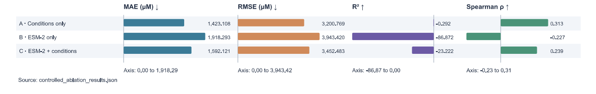
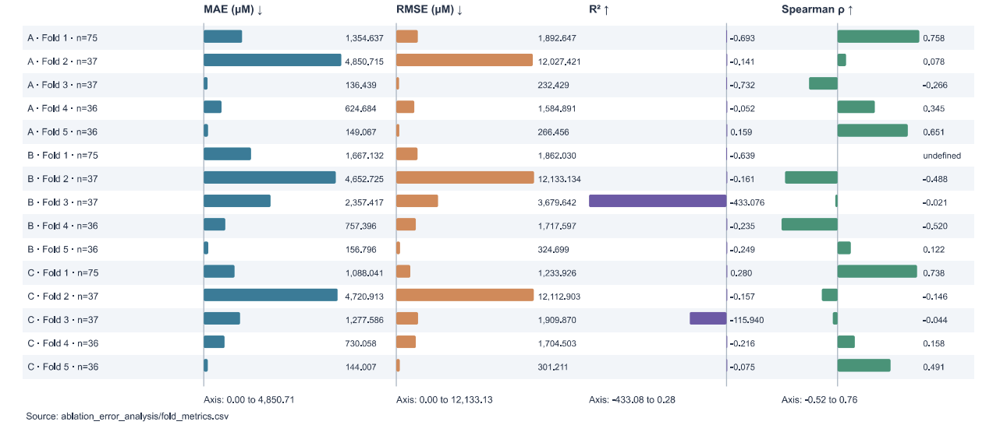
Original slide text (6 paragraphs)
Extracted from the original slide. Equations in this transcript may be linearized; use the explained formulas above.
- 67
- Department of AI&DS
- Controlled feature Ablation
- Individual Folds:
- Group Error Analysis:
- October 12, 2026
Slide 68 — Balance sensitivity and actual-versus-predicted graphs
Top panel: shows mean metrics for full 221-row and balanced 82-row cohorts.
| Setting | MAE µM | RMSE µM | R² | Spearman |
|---|---|---|---|---|
| Ridge, 221 rows | 1337.512 | 3145.400 | −0.541 | 0.320 |
| Ridge, 82 rows | 1356.370 | 3249.359 | 0.008 | 0.467 |
| Gradient Boosting, 221 rows | 1307.386 | 3082.411 | −0.058 | 0.238 |
| Gradient Boosting, 82 rows | 1358.692 | 3258.148 | −0.034 | 0.224 |
Ridge’s R²/rank correlation increase in the subset, while MAE/RMSE also increase. Gradient Boosting shows mixed changes. The cohort changes, so this is sensitivity evidence rather than a clean improvement on an unchanged external test set. These Ridge results come from the separate model-comparison/sensitivity experiment, not A/B/C configuration C.
Bottom panel: x-axis is measured TPA µM; y-axis is predicted TPA µM. Each dot is an OOF record for A, B, or C. The dashed diagonal is y-hat=y, perfect agreement. Below the line means underprediction; above it means overprediction. Far-right points close to the bottom demonstrate severe underprediction of high concentrations. The broad 0–50,000 axis compresses low-concentration detail, so a supplementary zoom could aid explanation without replacing the full-range view.
Actual usage: these points are saved research OOF predictions, not the live API result for a user input.
View original slide figures
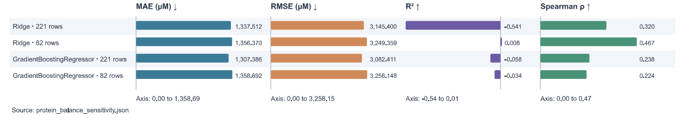
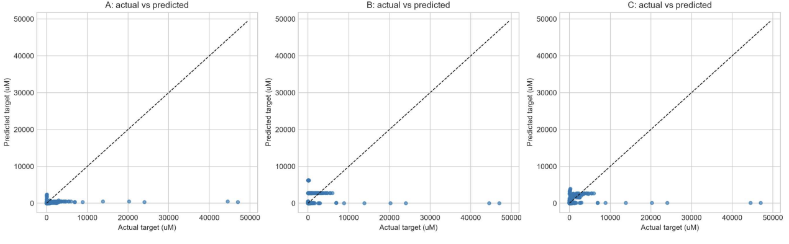
Original slide text (5 paragraphs)
Extracted from the original slide. Equations in this transcript may be linearized; use the explained formulas above.
- 68
- Department of AI&DS
- Actual vs Predicted A/B/C:
- Protein Balance Sensitivity:
- October 12, 2026
Slide 69 — Squared error contribution by protein
- Three panels: one each for A, B, and C.
- x-axis: protein IDs.
- y-axis: protein SSE in µM²; the scientific-notation multiplier near the axis must be read with tick values. A tick of 5 under 1e9 represents 5 billion µM².
- Tallest bars: protein 37/PHL-7 dominates all three panels.
- Smaller bars: other proteins still matter; their contribution is visually compressed by the dominant scale. Protein 149 is particularly relevant to B/C fold 3.
- Connection to eta_p: the figure shows absolute SSE. Divide each bar’s height by the sum of the panel’s bars to obtain the fraction in slide 56.
Interpretation: this chart identifies where squared error accumulates. It does not measure how useful a protein is biologically or how much evidence it has.
View original slide figure
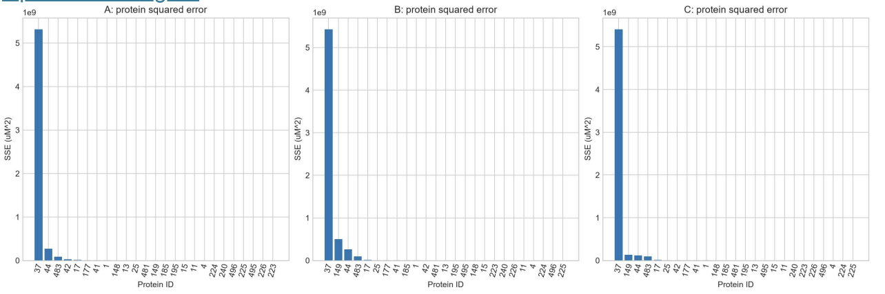
Original slide text (4 paragraphs)
Extracted from the original slide. Equations in this transcript may be linearized; use the explained formulas above.
- 69
- Department of AI&DS
- Squared error contribution by Protein:
- October 12, 2026
Slide 70 — Interface overview screenshot
This slide is an image, so its visible content needs to be read separately from slide text.
- EnzAIme / Research workspace / Research mode: labels the application as a research tool.
- Sidebar: Overview introduces the project; Predict accepts a sequence/conditions; Explore candidates ranks available proteins; Research evaluation presents metrics; Evidence & limits explains provenance and scope.
- “From protein sequence to measurable signal”: introductory wording for the prediction workflow. The signal displayed by this system is a computational concentration estimate.
- Description: restricts the workspace to predicted TPA concentration from PET-degrading enzyme sequences under specified assay conditions.
- Open prediction workspace: navigates to the form.
- Prediction disclaimer: distinguishes computational estimates from experimental results.
- 221 confirmed assay records / 25 unique proteins / TPA / PET: summarize the confirmed research/evidence cohort, target, and substrate. They do not establish the legacy model’s training cohort.
- Scope locked: repeats the PET/TPA boundary.
The screenshot is saved presentation evidence; it is not a fresh execution performed during this explanation.
View original slide figure
Original slide text (0 paragraphs)
Extracted from the original slide. Equations in this transcript may be linearized; use the explained formulas above.
Slide 71 — Prediction form and result screenshot
- “Describe an assay”: prompts for the sequence and experimental conditions of interest.
- Protein-sequence field: accepts standard one-letter amino-acid codes. The backend produces the embedding.
- Temperature=40 °C, pH=8.0, duration=24 h: the visible input scenario.
- Run prediction: triggers the prediction API workflow.
- Output=20.59 µM: the displayed computational TPA estimate for that screenshot’s request. The figure rounds the result; full precision is not recoverable from the screenshot alone.
- Target TPA / substrate PET: identifies the response interpretation.
- Repeated conditions in the result: let the user verify which scenario produced the number.
- “Not a universal enzyme activity score”: a concentration prediction under supplied conditions does not measure all catalytic properties.
- Serving model disclosure: names ESM-2 + Environment Ridge as a legacy research model and states unresolved exact training/evaluation membership.
How to explain the 20.59 versus 23.14 values: this screenshot uses 24 hours. Slide 64’s saved IsPETase integration example uses 48 hours. Duration is an input, so the requests differ. Do not present the screenshot as a new experimental measurement.
View original slide figure
Original slide text (0 paragraphs)
Extracted from the original slide. Equations in this transcript may be linearized; use the explained formulas above.
Slide 72 — Candidate exploration screenshot
- Explore available proteins: ranks existing candidates, not generated mutants.
- Provenance paragraph: scores are from the legacy model; evidence counts come from confirmed TPA/PET records; rankings require experimental validation.
- Rank candidates button: runs condition-only recommendation.
- Visible conditions: pH 8, 40 °C, 24 h.
- Rank 1: PHL-7, protein ID 37, predicted 496.95 µM, eight confirmed records, with sequence and embedding available.
- Rank 2: TfCut2, protein ID 25, predicted 220.98 µM, one confirmed record, with sequence and embedding available.
- Rank 3, partly visible: PET93, protein ID 495, predicted 174.73 µM. The image cuts off the rest of this card, so do not infer additional hidden card content from it.
- Evidence source path and note: tell the user where counts came from and that those counts do not prove the model trained on the confirmed cohort.
How to present: “These are ranked model estimates for one scenario. Eight records versus one describes available evidence, not a calibrated probability that the first candidate is superior.”
View original slide figure
Original slide text (0 paragraphs)
Extracted from the original slide. Equations in this transcript may be linearized; use the explained formulas above.
Slide 73 — Legacy evaluation screenshot
- Currently served legacy research model: identifies which model the displayed evaluation is reported for.
- API connected: the screenshot’s service status; it does not certify prediction accuracy.
- 227 reported legacy records / 25 proteins / protein-grouped / five folds: metadata from saved legacy evaluation.
- Mean ± variation: the visible values are:
| Metric | Displayed mean | Displayed variation | Interpretation |
|---|---|---|---|
| MAE | 1441.9 µM | 1764.45 µM | Absolute-error summary |
| RMSE | 3304.46 µM | 4860.35 µM | Large-error-sensitive summary |
| R² | −4.2561 | 9.2827 | Weak reported generalization with large variation |
| Spearman | 0.3937 | 0.4288 | Reported rank association |
The saved JSON names the variation fields std; the exact producing run/statistical conventions remain unresolved. They are not confidence limits for an individual prediction.
Fold error profile: paired MAE/RMSE bars for F1–F5. The displayed rounded RMSE values are approximately 1476, 681, 816, 11970, and 1579 µM; fold 4 dominates this legacy RMSE profile. This is a different fold numbering/cohort from confirmed A/B/C, where PHL-7 is in fold 2. Do not merge the two fold interpretations.
Caption: protein-grouped folds can vary in counts and target ranges. These legacy metrics must stay labeled separately from the confirmed research experiment.
View original slide figure
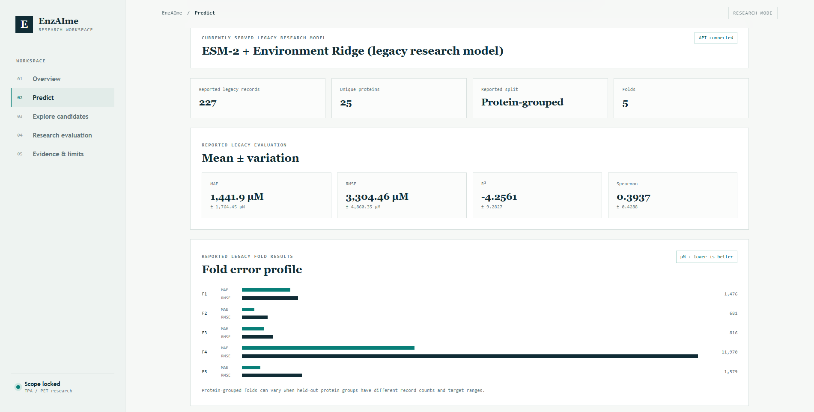
Original slide text (0 paragraphs)
Extracted from the original slide. Equations in this transcript may be linearized; use the explained formulas above.
Slide 74 — Computational complexity
- Sequence embedding dominates: a 33-block encoder is much more expensive than applying a 13-feature regression.
- Quadratic self-attention: with ell tokens, an attention head evaluates relationships among token pairs. The conceptual pair matrix has ell×ell entries. At fixed hidden width, that attention component scales approximately with ell².
- Scope of the complexity claim: feed-forward layers also contribute computation; implementation choices affect memory and speed. The statement does not mean every operation or measured runtime is exactly quadratic.
- Cached candidate vectors: avoid 25 repeated encoder calls for each recommendation request.
- PCA/Ridge: their fitting costs depend on record count and dimensions; applying stored transforms is comparatively light.
- No latency benchmark: do not invent milliseconds/request or supported users from asymptotic complexity alone.
Illustrative comparison: doubling token length approximately quadruples the token-pair attention work, holding other choices fixed. That is a theoretical scaling explanation, not a measured timing result.
Original slide text (9 paragraphs)
Extracted from the original slide. Equations in this transcript may be linearized; use the explained formulas above.
- 74
- Department of AI&DS
- Complexity Analysis
- • Sequence embedding is the main computational cost.
- • Transformer self-attention grows quadratically with sequence length.
- • Caching avoids repeated extraction for the 25 known proteins.
- • PCA and Ridge costs depend on rows and retained dimensions.
- • No measured latency benchmark is claimed.
- October 12, 2026
Slide 75 — Memory/storage complexity
The displayed embedding-storage calculation is:
25 × 1280 × 4 = 128000 bytes = 125 KiB
Equation in LaTeX
25\times1280\times4=128000\ \text{bytes}=125\ \text{KiB}.- 25 is the number of cached protein vectors.
- 1280 is values per vector.
- A float32 value occupies 4 bytes.
- One KiB is 1024 bytes, so 128000/1024=125.
This counts raw vector payload only. File headers, indexes, loaded-object overhead, data tables, and model weights add storage/memory. The large ESM encoder outweighs these small cached vectors. GPU activations and batch/sequence lengths also affect inference memory. Deployment sizing must be measured on the actual target workstation.
Original slide text (8 paragraphs)
Extracted from the original slide. Equations in this transcript may be linearized; use the explained formulas above.
- 75
- Department of AI&DS
- Complexity Analysis (Contd…)
- • Space requirements include encoder weights, embeddings and assay data.
- • 25 × 1280 float32 embedding values occupy about 125 KiB, excluding overhead.
- • The encoder dominates storage and inference memory.
- • Deployment capacity requires measurement on the target workstation.
- October 12, 2026
Slide 76 — SWOT: strengths and weaknesses
- Traceable records: the audit allows checking which source measurements support the supervised targets.
- Leakage controls: grouping and training-only preprocessing address specific evaluation risks.
- Reusable embeddings: make repeated comparisons computationally practical.
- Reproducible comparisons: shared folds and saved research scripts improve repeatability, while encoder/run provenance still deserves careful recording.
- Only 25 proteins: the number of independent protein groups is small even though there are 221 rows.
- Uneven coverage/heterogeneity: many rows from one protein and varying protocols limit interpretation.
- Poor generalization: openly acknowledge the current errors and negative R².
How to present: strengths describe methodological work; weaknesses describe the limits of what the present evidence supports.
Original slide text (8 paragraphs)
Extracted from the original slide. Equations in this transcript may be linearized; use the explained formulas above.
- 76
- Department of AI&DS
- SWOT Analysis
- • Strengths: traceable activity records and explicit leakage controls.
- • Strengths: reusable embeddings and reproducible A/B/C comparisons.
- • Weaknesses: 25 proteins, uneven coverage and assay heterogeneity.
- • Weaknesses: current generalization and absolute errors remain poor.
- October 12, 2026
Slide 77 — SWOT: opportunities and threats
- Better metadata: enzyme loading, substrate properties, and harmonized assay context could support a better-defined future model.
- More validated proteins: expands the independent biological coverage.
- Experimental prioritization: a future use if predictive ranking is validated prospectively.
- Protocol confounding: the model might learn study-specific patterns instead of transferable enzyme behavior.
- Unsupported extrapolation: predictions outside the evidence distribution may be unreliable even when the request passes validation.
- Industrial overclaiming: functioning software does not establish waste-treatment efficacy or process safety.
Actual response to these threats: maintain scope labels, inspect errors, improve validation, and link future claims to experiments.
Original slide text (8 paragraphs)
Extracted from the original slide. Equations in this transcript may be linearized; use the explained formulas above.
- 77
- Department of AI&DS
- SWOT Analysis (Contd…)
- • Opportunities: better assay metadata and additional validated proteins.
- • Opportunities: experimentally supported candidate prioritization.
- • Threats: protocol confounding and unsupported extrapolation.
- • Threats: uncertain predictions presented as industrial validation.
- October 12, 2026
Slide 78 — Project cost
- Existing workstation: reused development hardware.
- Open-source stack: avoids some software-license costs but does not imply zero operational cost.
- Compute/storage/internet: depend on how much extraction, experimentation, and hosting is performed.
- Wet-lab/structural validation: need a separate budget and appropriate expertise.
- No verified monetary total: do not provide a guessed project cost as a measured result.
How to present: “The prototype used available computing resources. We have not completed a verified cost study for laboratory validation or production operation.”
Original slide text (9 paragraphs)
Extracted from the original slide. Equations in this transcript may be linearized; use the explained formulas above.
- 78
- Department of AI&DS
- Cost of the Project
- • Existing workstation is the current development resource.
- • Software stack uses open-source tools.
- • Compute, storage and internet costs depend on usage.
- • Wet-lab assays and structural validation need separate budgeting.
- • A verified monetary project total is not available.
- October 12, 2026
Slide 79 — Social impact
- Plastic biodegradation research: the platform can support exploration and evidence organization.
- Transparent evidence: source labels and limitations help researchers interpret outputs.
- Reduced screening effort: a potential future benefit if prioritization is validated.
- Experimental/process validation required: ecological benefit depends on actual treatment performance and operating conditions.
- No measured treatment impact: the project has not established kilograms of plastic removed, reduced emissions, or industrial cleanup efficiency.
How to present: discuss the intended benefit without translating a model score into a demonstrated environmental outcome.
Original slide text (9 paragraphs)
Extracted from the original slide. Equations in this transcript may be linearized; use the explained formulas above.
- 79
- Department of AI&DS
- Social Impact
- • Potential support for research on plastic biodegradation.
- • Transparent evidence can help researchers assess candidates.
- • Future validated tools may reduce unnecessary screening effort.
- • Environmental benefits require experimental and process validation.
- • The present prototype does not measure waste-treatment impact.
- October 12, 2026
Slide 80 — Applications
- Current prediction-method research: compare feature choices and models for PET/TPA assay targets.
- Current exploratory comparison: inspect candidate scores and evidence counts.
- Future laboratory support: prioritize experiments under defined conditions after improved validation.
- Future mutation/structure work: requires suitable labels, structural evidence, and a validated method.
- Other waste categories: need separate targets, data construction, and evaluation rather than simply relabeling the PET model.
Boundary: the same interface pattern could be reused, but the scientific model would need defensible evidence for each new task.
Original slide text (9 paragraphs)
Extracted from the original slide. Equations in this transcript may be linearized; use the explained formulas above.
- 80
- Department of AI&DS
- Applications
- • Current: TPA/PET prediction-method research.
- • Current: exploratory candidate comparison and evidence review.
- • Future: condition-aware laboratory screening support.
- • Future: mutation prioritization and structural assessment.
- • Other wastewater categories require their own defensible datasets.
- October 12, 2026
Slide 81 — Future work
- Refine from observed errors: investigate high-target underprediction and low-target overprediction rather than changing models without a diagnosed reason.
- Expand proteins and metadata: prioritize independent biological coverage and interpretable experimental conditions.
- Uncertainty/grouping robustness: assess whether rankings remain stable and whether stricter sequence-related grouping changes performance. Uncertainty estimates need calibration; repeated point predictions are not enough.
- Explainability: explain which inputs affect a score, while distinguishing association from causal enzyme mechanisms.
- Mutation/structure evidence: obtain data appropriate to those tasks before claiming predictive capability.
- Laboratory collaboration: test selected hypotheses and use measured outcomes to evaluate the workflow prospectively.
Project-lead priority: complete traceable model-run records and improve unseen-protein evaluation before presenting the ranking as experimentally dependable.
Original slide text (10 paragraphs)
Extracted from the original slide. Equations in this transcript may be linearized; use the explained formulas above.
- 81
- Department of AI&DS
- Future Work
- • Refine models from observed error patterns.
- • Expand validated proteins and assay metadata.
- • Test uncertainty and grouping robustness.
- • Add explainability to candidate rankings.
- • Obtain evidence for mutation and structure work.
- • Collaborate on laboratory validation.
- October 12, 2026
Slide 82 — References
- Tran and Hy: IEEE Transactions on Evolutionary Computation, volume 29, issue 2, pages 418–428, 2025; DOI 10.1109/TEVC.2024.3439690. It supports the literature discussion of language-model-guided directed evolution. The official implementation includes its citation.
- Hong and colleagues: the slide cites IEEE TEVC, volume 29, issue 3, pages 646–660, 2025; DOI 10.1109/TEVC.2024.3365814, for the structure-optimization paper. The full paper methods were not available for independent detailed verification in this review.
- DOI: a persistent identifier used to locate the publication.
- 2024 in a DOI versus 2025 publication: these are not inherently inconsistent; online/publication metadata can have different dates.
Completeness correction: add full references for the Lin and Rives papers from slide 17 and appropriate citations for data sources and reproduced diagrams. Keep paper results distinct from results produced by EnzAIme.
Original slide text (6 paragraphs)
Extracted from the original slide. Equations in this transcript may be linearized; use the explained formulas above.
- 82
- Department of AI&DS
- References
- • [1] T. V. T. Tran and T. S. Hy. Protein Design by Directed Evolution Guided by Large Language Models. IEEE TEVC, 29(2), 418–428, 2025. DOI: 10.1109/TEVC.2024.3439690.
- • [2] J. Hong, Z.-H. Zhan, L. He, Z. Xu and J. Zhang. Protein Structure Prediction Using a New Optimization-Based Evolutionary and Explainable Artificial Intelligence Approach. IEEE TEVC, 29(3), 646–660, 2025. DOI: 10.1109/TEVC.2024.3365814.
- October 12, 2026
Slide 83 — Thank you
This closes the presentation and invites questions. Use the final spoken sentence to restate the defensible contribution: a confirmed dataset, a controlled generalization study, diagnostic evidence, and an exploratory interface, with current model limitations explicitly documented.
Suggested closing: “We built a traceable PET/TPA research workflow and evaluated the contribution of protein embeddings. The present results identify generalization failures that guide our next modeling and experimental steps.”
Original slide text (4 paragraphs)
Extracted from the original slide. Equations in this transcript may be linearized; use the explained formulas above.
- 83
- Department of AI&DS
- Thank You
- October 12, 2026
Formula-to-code map
| Formula or concept | Main slide(s) | Actual project location and role |
|---|---|---|
| Target unit conversion | 41, 44 | scripts/build_tpa_provenance_audit.py: accepted-unit conversion after analyte checks |
| Confirmed/ambiguous partition | 23, 29, 38–40 | scripts/build_confirmed_tpa_dataset.py: builds separate accepted/excluded tables |
| Masked mean pooling | 21, 46–47 | backend/app/services/esm_encoder.py: sums masked hidden states, clamps denominator to 1e-9 |
| Protein-group fold sets | 30–31, 52 | scripts/run_controlled_ablation.py: build_group_splits, GroupKFold(5) |
| A/B/C transformations | 48 | Same script: fit_and_predict, per-branch StandardScaler/PCA |
| Ridge objective and log transform | 49, 51 | Same script: Ridge(alpha=10), log1p training target, expm1 output |
| MAE/RMSE/R²/Spearman | 32–33 | Controlled script and scripts/analyze_ablation_errors.py; explicit undefined-metric status in diagnostics |
| SSE share and matched errors | 56–57 | scripts/analyze_ablation_errors.py and saved OOF/protein diagnostic tables |
| Legacy candidate score | 35 | backend/app/services/predictor.py: saved PCA→concatenate→saved scaler→Ridge→expm1→clip |
| Confirmed evidence count/ranking | 34, 36 | backend/app/services/recommender.py: load candidates/count rows/score/sort |
| Request limits | 36, 63 | backend/app/schemas/recommendation.py, prediction schema, and frontend validation |
| UI states | 65 | frontend/src/App.jsx: independent loading/result/error variables and finally blocks |
| Legacy evaluation values | 66, 73 | models/training_metrics.json, reports/results/cross_validation_results.json |
Questions to prepare for the reviewer
What is your novelty? A provenance-audited PET/TPA dataset workflow, controlled assessment of feature blocks under protein grouping, detailed diagnostics, and a transparent research interface. Do not claim a new ESM architecture or proven superiority of the combined model.
Why does A beat C? The observed aggregate results favor A. Small independent protein coverage, assay imbalance, missing context, preprocessing/model choices, and error concentration are relevant limitations; the study has not isolated one complete causal explanation.
Does negative R² mean the code failed? No. It means prediction SSE exceeds the variance-reference SSE for the evaluated set. Code correctness and useful generalization are separate questions.
Why keep the 47,000 µM record? Retained provenance supports the reported value, with digitization uncertainty noted. A difficult observation should not be removed merely because it increases error.
Is the screenshot proof of accuracy? It shows an application response. Predictive validity requires appropriate held-out experimental comparisons.
Why do recommendations still use the legacy model? The current application loads existing artifacts. A confirmed research experiment has not automatically replaced them. The interface identifies the legacy model and its lineage limitation.
Are evidence counts confidence scores? No. They count confirmed rows, which may include repeated conditions and related records. There is no calibrated conversion from count to prediction confidence.
Are these “folds” protein structures? No. A cross-validation fold is a data partition. Protein folding/structure is a different meaning discussed in the literature slides.
Did you train ESM-2? No. Its weights are frozen. You fit preprocessing and regressors on the research cohort.
Are there convolution layers? The implemented ESM-2 path uses Transformer attention/feed-forward blocks followed by pooling/PCA/Ridge. Do not add a convolution block to explain this implementation.
Does the UI evaluate a newly trained model each time? No. Evaluation endpoints read saved results; prediction/recommendation use loaded artifacts.
Will changing pH necessarily change which protein ranks first? With the present additive Ridge inference path, condition changes contribute the same shift on the log scale for every candidate. Scores can change while their mathematical ordering stays the same, apart from clipping ties and numerical edge cases. The interface accepting conditions does not by itself establish protein-specific condition responses.
Corrections to remember while speaking
- Slides 11–12 use overly broad claims about enzyme failure and eliminating screening; qualify them as motivations/potential benefits.
- Slide 34/35 splits q_p across slides; present the complete formula together.
- Slide 47 should describe attention-mask token pooling, including special tokens.
- Slide 50’s 3/10/13 are final model dimensions, not raw 3/1280/1283 dimensions.
- The two base papers’ detailed benchmark counts should be checked against the exact final publication versions; this guide does not invent missing verification.
- UI state notation is a conceptual summary of actual React state variables.
- Model-comparison Ridge, controlled C, and legacy served Ridge are distinct pipelines/results.
- The existing audit is a historical record. Current recommendation evidence uses the corrected confirmed dataset.
Evidence and preservation
This guide used the supplied slide file, its embedded figures/screenshots, current encoder/predictor/recommender/frontend code, the controlled-ablation and diagnostic scripts, saved confirmed results, and the legacy audit. It did not retrain models, regenerate embeddings, execute a new prediction, or edit the PPTX. Runtime compatibility and integration values are explained as saved evidence. The original image assets are included for study. The slide_inventory.json records all slides in the presentation's actual order. source_manifest.json records source hashes at extraction time.